Ego Development: A Full-Spectrum Theory Of Vertical Growth And Meaning Making
Prologue
After many years of promising to write a book on Ego Development Theory (EDT for short) and the Leadership Maturity Framework (LMF), I decided to begin the process by revising the 9 levels-paper. Of all my papers, it is the most cited and the most often required reading in college courses in psychology and human development. It’s high time to revisit the original 9 levels paper in regards to argument, content and style. Thus updating it seems like a useful first step towards a final, more comprehensive writing project. As a non-native speaker of English, clear, concise, and convincing writing remains a challenge. I hope this version shows some improvements in readability and clarity of reasoning from the earlier versions.
I am also writing this to answer some recurring critics of ego development theory by prominent theoreticians because these pertain to Loevinger’s version, not to the one I have developed since the 1980’s. Granted I based my original research on Loevinger’s approach and followed her rigorous requirements for testing hypotheses using actual data as a source of new theory. Most other theoreticians started out with s ’s model of how to do grounded research and validating one’s findings, I soon realized some limitations of her theory. It was and still is basically describing a sequence of meaning making levels. Each level is more complex than the previous one and includes behavioral, motivational, cognitive, and emotional components. Yet it does not explain what actually happens in development.
Her theory has no structural underpinnings for why and how people develop from one stage to the next. Nor was it sufficiently differentiated, in my view, at the high end of the scale. Thus I set out to collect new data that would allow for a definition of what underlies the movement from stage to stage and to refine the high end. In 1985 I first proposed the structure of increasing capacity to take perspective on experience (external) and the self (internal) at a symposium of the Society for Research in Adult Development. http://adultdevelopment.org/ The paper was well received and acknowledged as an important contribution and expansion of Loevinger theory by participants including Lawrence Kohlberg and Michael Commons. They and others encouraged me to continue the research and write it up in a paper to be published in the conference proceedings. Based on the rare, yet highly suggestive data I had collected up to then, I was also able to document two stages to replace Loevinger’s vague Integrated stage. They provided clear criteria that distinguished them qualitatively from earlier stages and each other. They followed the overall structure of repeating cycles of differentiation and integration into ever larger interconnected systems of meaning apparent to the self. Self-awareness seems to move from first noticing concrete, external features, to traits, to behavior patterns, to awareness of how patterns are acquired via cultural conditioning, to seeing interrelated systems, and finally, to see through the attempts of the ego to codify and explain reality.
Most of the research was done as an independent scholar, an identification that has bountiful benefits and naturally some downsides. The beauty of this position is that it has no constraints for exploring what peaks one’s interest, in what contexts one choses to do so, in which form, and how long it takes. There are no deadlines, no one to make demands on progress and publishing records other than those imposed by oneself. There is also a prize to be paid. There is no salary and no academic support. There are no semester breaks and sabbaticals, time off when other scholars in academia do their writing. Other than reading and attending symposia and professional conferences, there is little intellectual exchange and challenge. There is also no guaranteed way of making a living unless one creates independent work for oneself. Nonetheless, I chose to follow the independent scholar path and worked on collecting more data and refining the theory and the measuring tool for 15 years before I reentered academia to get a doctorate and to “prove” my conjectures as not just figments of my mind. By the time I wrote my dissertation, I based my thinking on over 4500 Sentence Completion Tests or over 130,000 pieces of evidence. I joke that I do not recommend that others follow my foot steps for their dissertations. It’s a piece of writing that many still consult both for its thesis and as a research model.
I consider it a powerful advantage over Loevinger’s knowledge of language that I grew up in a multi-lingual society, and was trained in linguistics and especially semantics at university in Switzerland. Semantics is that branch of linguistics that deals with the meaning of words, how new words get created, and how their meanings change through the years along with the evolution of civilization. Thus, I was primed to pay attention to minute differences in usage, context and meaning shifts over time in a way that Loevinger’s research team was not. As I studied thousands of sentence completions, I kept records of interesting examples and new potential categories. Initially I added them to enrich and sometimes correct Loevinger’s manuals. Eventually, our efforts became increasingly more complex and different from both the original manuals (1970, 1978) and the 1996 revised edition. One can certainly write a whole chapter just on the ongoing challenges of creating viable test stems and manual revisions. But this is not my focus here. What is important is that ego development theory as we, at the Center for Leadership Maturity, conceive of it is far more comprehensive, dynamic, and complex than Loevinger’s original contribution to the field. While many people dealing with adult development are interested in the high-end of human potential, the mature stages and ego-transcendence, my describing of the underlying structure of development seems to me just as valuable a contribution.
Worldwide opportunities to teach Ego Development Theory and how to do support others’ well- being and growth by skillfully tailoring one’s approach to their level of meaning making has left me little time to devote to writing. Sharing in person what we know about adult development has been work I love. It is also work I believe, crucial in understanding our world full of strife and clashes among different world views. Knowing about developmental differences can shed light on why some of these conflicts are so intractable and longstanding, and it invites compassion and hope. Helping others who consult, coach and facilitate growth in other adults to be aware of their own meaning making preferences as well as teaching them to tailor their approach to the capacity of the client gives me ongoing pleasure and fulfillment. The request for me to write down my reflections on adult development and explicate ego development theory has been increasing. The demand also comes from within as I grow more white- haired and less physically agile in my later years and personal teaching on other continents becomes more of a challenge. May this new and expanded version then serve as a trial run for writing a full-length book on adult development. The book will look at Ego Development Theory and its study from many angles. It will likely include the evolution of the theory and my current view of development distilled from 35 years of study, dialogues with peers, with others of many different persuasions, and my own life experience as a researcher, teacher, training facilitator and life-long learner. There is so much to share and to explore. There are so many questions open about the meaning of being a human being, and so much wonder in simply being alive and the having of ultimate questions and concerns about life’s meaning.
Along with discovering Loevinger’s theory, it was Herbert Fingarette’s (1963) insightful analysis of the synthetic function of the ego that first inspired me to turn to the study of positive adult development, resilience, and wisdom. Spence’s Narrative Truth And Historical Truth: Meaning And Interpretation In Psychoanalysis (1982) added powerful evidence to my intimation that narrative coherence may be more important than actual historical truth in people’s ability to find meaning in life. Ever since I encountered this view, I wondered whether the relationship between objective science and the humanities—and even religion—is analogous: the story we tell about the meaning of a given scientific fact perhaps weighs more heavily for our survival than its absolute truth.
Ego development is a comprehensive theory of meaning making and how it evolves from its early beginnings to very mature and integrated ways of living one’s life and seeing the ego as a necessary facet of being a human being with all its powers and limitations. I will have to spend focused time in exploring and justifying the choice of “ego” as a viable construct. As a linguist, I am as clear as one can be in the world of symbolic representations and human discourse that words mean what I assign them to mean. That is they have no intrinsic value other than as pointers to experience. Especially abstract, psychological terms such as ego, self, soul, mind, and purpose serve to label experiences so we can talk to each other about them, but they do not actually exist separate from the underlying experiential continuum.
Introduction
Some general tenets of constructive adult developmental theory:
I can say with a good conscience that I have studied other people’s developmental theories to a degree that few of my colleagues have found necessary. An exception is Ken Wilber. In Integral Psychology (2000) he offered a comprehensive set of about a 100 tables that compare both ancient and current theories of vertical development with each other.
I herewith offer a simple distillation of some of the generally held tenets in the field of adult development. In all of my studies, I focus on meaning making, not just on the development of cognitive complexity and the growth of the mind. This is so because I have never observed a healthy human being that is not of one body, heart and mind, and spirit if you will. Although modern science has enabled us to look at separate variables of any complex2 and explore them and describe their properties and dynamics. Nonetheless, we experience the world as a whole human being. What changes is how we make meaning of ourselves and our experience, and how many different aspects of the experience we are conscious of and can pay attention to..
In general, full-range human development theories share the following assumptions:
- Development theory describes the ideal unfolding of human potential towards deeper understanding, greater love, wisdom and effectiveness in the world.
- Growth occurs in a logical sequence of stages or expanding world views from birth to adulthood. The movement is often likened to an ever widening spiral.
- Overall, world views evolve from simple to complex, from static to dynamic, and from ego-centric to socio-centric to world-centric.
- Later stages are reached only by journeying through the earlier stages. Once a stage has been traversed, it remains a part of the individual’s response repertoire, even when more complex, later stages are adopted as primary lenses to metabolize experience.
- Each later stage includes and transcends the previous ones. That is, the earlier perspectives remain part of our current experience and knowledge (just as when a child learns to run, it doesn’t stop to be able to walk).
- Each later stage in the sequence is more differentiated, integrated, flexible and capable of functioning more adequately in our rapidly changing and ever more complex world.
- As healthy development unfolds, autonomy, freedom, tolerance for difference and ambiguity, resourcefulness as well as flexibility, self-awareness, and skill in interacting with the environment increase while defenses decrease.
- People’s stage of development influences what they notice and can become aware of, and therefore, what they can describe, articulate, cultivate, influence, and change.
- Derailment in development, pockets of lack of integration, trauma and psychopathology are seen at all levels. Thus later stages are not necessarily more adjusted or “happier.”
- A person who has reached a later stage can understand earlier ones because they are part of their own becoming, but a person at an earlier stage cannot fully understand the later ones.
- The depth, complexity, and scope of what people notice can expand throughout life. Yet no matter how evolved we become, our knowledge and understanding remain partial and incomplete.
- Development occurs through the interplay between person and environment, not just by one or the other. It is a potential and can be encouraged and facilitated by appropriate support and challenge, but it cannot be guaranteed.
- While vertical development can be invited and the environment optimally structured towards growth, it cannot be forced. People have the right to be who they are at any station in life.
- The later the stage, the more variability for unique self-expression exists, and the less readily we can determine where a person’s center of gravity lies.
- All stage descriptions are idealizations that no human being fits entirely.
The LMF Framework and Ego Development Theory
Constructive, adult development theory and the LMF
Ego Development Theory has come a long way since Jane Loevinger’s original (1970) and sparse stage descriptions4 compared to our current understanding of the full trajectory of development, and the mechanisms, and patterns of vertical growth in the personal realm. We also have learned more about group dynamics, family systems, and organizational development. Still these are far less well explored than individual adult development.
What makes Ego Development Theory unique and different from other theories in the field of constructivist developmental approaches is its focus on meaning making. Ego Development Theory addresses the whole person. It is best understood as a framework that portrays the growth of individuals as moving into ever greater awareness and integration about both the inner and the outer world.
Although Ego Development Theory focuses on the development of individual awareness, it fully recognizes that there is no individual interior development outside a cultural and linguistic surround, nor is individual growth possible without the external context (historical, geographic, infrastructure, etc.) as it supports and constrains what is possible in the interior.
Ego Development Theory has been developed and refined over at least 40 years by empirical means unlike almost all other developmental approaches6 which first propose a theory, then find appropriate means to measure their constructs. Ego Development Theory is a grounded theory. It was derived solely based on evidence from responses to the sentence completion test or the MAP (Maturity Assessment Profile).
Ego-development theory postulates that the content and the structure of people’ s language production models their conceptual competence, and that the underlying cognitive structure can be deduced from a matrix of linguistic signs. It assumes that individuals function at the level that is most egosyntonic7 or explains the world best to themselves, particularly in areas in which they are motivated, such as day-to-day living (see Fischer, Hand, & Russell, 1984).
At the present time, complex thought and cognition are assumed to be testable only if they are expressed through language, the symbolic tool with the most widespread consensual validation within a given culture.2 Other symbolic systems (pictorial, for instance) may express complex thought, but they cannot speculate about it within that symbolic frame of reference. It is the metalinguistic (self-referral) properties of language that make complex thought and its communication possible.
I posit that no matter what domain of human consciousness one investigates, one’s meaning is created and communicated through language. Moreover, the assessment of ego maturity, the MAP, is predicated on the notion that one’s choice of content and structure models one’s conception of reality.
Language as a mirror of one’s world construction: from chaos to cosmos
In terms of Ego Development Theory, language not only “reflects” human experience, but it also organizes and filters it. We use the term language to include all symbolic representations of one form or another. Natural language seems to be the most universally available and sophisticated of the many available symbolic representations. To explain and learn other systems, we resort to natural language to do so.
Several underlying assumptions about human nature will be discussed below to establish the role of language in cognition. The relationship between language as it structures experience and ego- development theory is then drawn through the discussion of the methods used to establish ego- development stages.
The premise that language is constitutive of experience is a cornerstone of ego-development theory. It includes the following assumptions about human nature:
1. Each human organism is both similar to all others of the species and also a unique manifestation of it. All human life is governed by the same overall organic systems principle and subject to the same “laws of nature” such as birth, change, and physical death. 2. All human life strives to fulfill the human propensity towards both individual differentiation and systematic assimilation (see Angyal, 1965, p. 49). At each developmental stage the quality and the balance of these two trends have to be renegotiated. 3. Humans can only develop into functional adults in a social context. One becomes homo sapiens only as one is homo socius. The primary socialization is carried out by significant others who transmit the culturally accepted orientation and definition of what constitutes the reality of everyday life (Berger & Luckman, 1966). The primary means of this socialization is language. 4. The human animal has a highly sophisticated capacity for the symbolic codification and manipulation of experience and, unlike other animals, it can become aware of this feat. Natural language is the most fundamental, universal, diverse, and flexible of existing codifications. 5. The capacity for language acquisition is inherent in the human species. A blueprint for language preexists. (See Pinker, 1994, the language instinct). As long as the potential for language is activated in children through exposure and training in any particular language at the maturationally appropriate time, they will acquire it. It will become their means for orienting themselves within that cultural surround and the basis for continuing cognitive development. On the other hand, individuals will not develop language without appropriate models. An external catalyst seems to be necessary for the particular to emerge out of potentiality. 6. Human beings have an intrinsic disposition and need for meaning-making and meaning- maintenance. Once a meaning scheme is in place it is constitutive of experience and acts as a filter for dissonant stimuli. The psychological construct of the “ego” represents this striving of human beings to understand themselves and the world they live in through active participation. (Fingarette, 1963) 7. Experiences vary in quantity and quality for different individuals depending on the circumstances of their being born into a specific historical time, geographic place, and linguistic and cultural environment.
The parameters of the human condition, however, have remained constant throughout history and around the globe. It has yet to be seen how cyborgs and other electronic life extensions will affect these fundamental aspects of being social beings and mortals.
1. As a physical organism we are born, grow, change, and die within the context of our physical environment. While we live, we need to eat, drink, breathe, eliminate waste matter, and sleep. 2. As an organism with the capacity for feelings, thought, and the need for self-knowledge and knowledge of our world, we depend on a human environment with which we are in dialogue for continued growth, self-experience, and self-definition.
Metaphorically speaking, ego-development theory provides one possible account of how individuals navigate the straits of human existence by using navigational lore, common sense, increasingly complex maps, algorithms, and intuition.
A more detailed analysis of the origin and function of language is also important because language is so habitual an aspect of our behavior that we tend to forget how complex it is and how it channels our meaning making. The view of language presented here is mainly based on ideas found in general semantics and in research investigating the social construction of reality.
Berger and Luckman, for instance, state that the human organism lacks the necessary ‘biological’ means to survive after birth without a human context. The period in which the child develops minimal self-sufficiency through interactions with his environment is also the period during which the “self” is formed. The individual self cannot be understood apart from the particular social and linguistic context in which it was shaped. What is to be considered important and real in everyday life is transmitted through language and has coercive power over the child once it gets inducted into a shared language.
For example, most of us are amused by a toddler calling a cat or a rabbit “doggie.” We find ourselves subtly correcting our children every time they make this “mistake” until they have learned to distinguish dogs from other four-legged animals by showing us that they can produce the right label. By about age five, children will have acquired a complex linguistic system adequate to manipulate abstract concepts, such as time and emotions, and to use effectively symbolic sound codifications to interact with others not present (e.g., via the telephone). They will also correct a two-year-old sibling who exhibits the dog-cat confusion: “This is not a dog, it’s a cat. Can’t you see?”
By now, labels appear to children as inherent in the nature of things. Any notion of their conventionality or arbitrariness is lost. “Reality” is experienced as consisting of distinct, permanent objects with clear boundaries. Knowledge of everyday reality as expressed in language has become self-evident, automatic, objective, and immutable; that is, reality has been reified. Reification or objectification is the process by which we attribute “real, concrete, material, self-subsistent, or separate existence to something that does not have it” (Basseches, 1984, p. 98).9 And not just children forget about how they acquired names for things, most adults do as well and are completely unaware of their arbitrary origins.
The fact that we swim in symbolic representations from the minute we wake to the moment we lay our heads to rest at night is hard to fathom for most people. We use language to accomplish a wealth of purposes and transactions: from the practical to the fantastic, from the ordinary to the sublime. We use language to identify the concrete objects and events around us and to tell the stories of our group and of ourselves. We also seem to use a shared language to assure ourselves and each other of the reality and meaningfulness of our existence. Meaningful human existence without language seems unimaginable. Even the willed silence of the hermit only means something in contrast to clatter and cacophony of the outside world.
We cannot overestimate the genius of our capacity for communicating and manipulating symbols. Developing language has been vital for the evolution of the human species and for its ongoing adaptation. Language is likely the most powerful means by which we are socialized into a specific overarching view of reality. For communication to work there must be some consensus among speakers of how a construct or symbol relates to the thing it symbolizes and this relationship must be learned by those wanting to participate in the collective. A shared language also functions to separate groups form each other and insures that specific knowledge and experience is transmitted among participants from generation to generation.
William James first called the original experience of the child a “blooming, buzzing confusion” (1890, p. 488). In simple terms, we are born preverbal, minimally able to sort the onslaught of stimuli.11 with our yet untrained senses. Then, if all goes well, our senses mature in conjunction with learning to communicate and to pay attention to individual things. We also learn a language from our caregivers along with names for the things that are important to our particular environment.
Figure x: Three levels of representation, prepersonal, personal and transpersonal
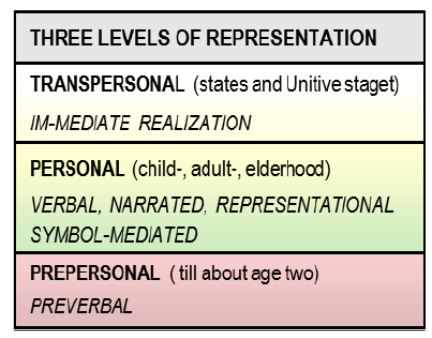Within a few years children communicate, learn and think exclusively via symbolic representations (these include sign language) and then use them throughout life. That human beings acquire complex language is one of the miracles of development in the first place.
Are you fully conscious that languages are the product of an initially arbitrary segmentation of experience, or the underlying undifferentiated field of phenomena according to the needs, creative imagination, and resourcefulness of a given language group. Languages consist of concrete as well as of increasingly abstract objects that serve communication and therefore human survival. Any object can be formed only by segmenting a previously undivided continuum into separate entities: the object itself, its opposite (what it is not), and the background against which it has been differentiated. The newly created boundary belongs to all three. Each exists through the others only. Any change in one changes the others.
This can easily be illustrated by cutting one shape (object) out of a single undivided piece of paper.
We then get three entities: 1) The background, 2) The positive cut-out, or the object, 3) The hole or negative space created. If I change the outline of the shape, all three parts change. Black only exist in contrast to white, hunger to satiation, life to death. All of these concepts are interdependent pairs, two side of the same coin. Figure: interdependence of polar opposites
Labels and their meanings, though arbitrary at first, become automatized and institutionalized through repetition and consensus. They then serve as unconscious building blocks for further distinctions and ramifications. The simplest definitions of what we consider tangible objects of everyday life, as well as the most complex, abstract, seemingly all-encompassing theories, are based on an increasing, elaborate and progressive segmentation of the original chaos. The beginning of the Old Testament provides a telling example for the “genesis” of the linguistic process of progressive segmentation. I paraphrase loosely: In the beginning there was the void. Then God divided it into light and dark, heaven and earth, etc. Then finally he told Adam to name all the creatures and make them under his dominion. The very naming makes things “objects” that can be owned and used.
This view of language and cognition is based on the direct experience of reality as an undivided unity without boundaries and time-space distinctions. It assumes that all manner of objects are human inventions or constructs including such abstract notions as the ego and the self. Another way of saying this is that all objects and labels are abstractions, “pulled out of” the underlying seamless reality. Abstraction comes from the Latin AB-STRAHERE meaning to pull out .
With every speech act, the members of a language community mutually reinforce the shared conceptual map or worldview for each other. By the time we are in school, we are so deeply habituated into language, we cannot imagine life without it. We generally can remember neither our own preverbal existence, nor how we acquired our mother tongue. For most people, the language habit remains unconscious and automatic throughout their lives.
Fortunately, the potential for language is innate (Chomsky, 1965; Pinker, 1994). As long as that potential is activated in children through regular exposure and training at the maturationally appropriate age, they acquire a specific language and hence will structure experience via its grammar and concepts. Developing more sophisticated language then becomes a central basis for continuing development within a given speech community. The cognitive growth that accompanies children’s physical maturation can be described as a process of continuous acquisition of finer and finer symbolic representations, elaborations, and distinctions. This also includes organizing existing concepts into higher orders of abstraction or of bundling them into umbrella categories. The more evolved and mature, the more “territories of experience” (Torbert, 1991, p. 60) become available for symbolic representation and cognitive manipulation.
Just as different cultures segment the continuum in different ways, so different individuals perceive a slightly different segment of the stimuli continuum, depending on the microstructure of their specific bodies (including genetic variables) and their development. They accept stimuli for processing both according to their innate general human makeup, their unique personal constitution, and according to the linguistic screens and limitations imposed on them by their culture. I assume that we are inevitably shaped by both the language instinct (nature) and the language habit (nurture).
It seems reasonable to conclude that in order to grow into adults, human beings are initially dependent on a “culturally” accepted orientation, and definition of what is real in life. Once a coherent view of reality is absorbed, it is constitutive of experience and filters out rivaling possibilities. As Rheingold put it: “Although it is rarely visible to us, we carry around in our heads a conceptual map of the world, a guidebook to rightness and wrongness, ugliness and beauty, value and worthlessness” (1988, p. 72). Such mental maps seem indispensable because they provide us with rules and scripts for action, and explanations of why things are the way they are. Moreover, they often rationalize, justify, and sometimes even sanctify our existence.
I will say more about how this plays out in developmental terms later when I summarize postconventional ego development. For now, I will point out that becoming aware of one’s acculturation marks a turning point in development. Once individuals understand that they are interpreters of reality, that they contribute their own meaning to external and internal “facts,” and that their insight may differ markedly from generally held definitions of what things mean, their explanatory universe has changed dramatically. They have become aware of the inevitability of cultural conditioning and programming.
In a step beyond relativism, people can become aware of the deeper discursive bias inherent in the construction of the object world via language. They realize that the objects themselves are inventions, arbitrary but useful for orientation. This includes an ever-growing awareness of the process and mechanism of thinking and meaning making themselves. In ego development, the experience of the limitation of the concept of “ego” and the need for its transcendence become central existential tasks at in the most mature stages of postconventional development.
Once one realizes that the universe itself has no boundaries, no objects, no causality, no time and space (Koplowitz, 1984), one has to face one’s intrinsic need to organize experience–one’s need to make cosmos out of chaos by attributing order, relevance, and meaning to it. Seeking a way of experiencing and meaning making that is direct - without the filter of language - can become a central existential quest. Ego-development theory—if it is to be viable explanatory principle—must be able to account for the transcendence of the self at the high-end of the trajectory. In our view only a theory that includes awareness of our symbolic embeddedness can offer an argument that can account for this extraordinary phenomenon without resorting to spiritual explanations.
I will later argue in more detail that the experience of the artificiality of such concepts as the “ego” occurs at the most mature stages of development. For now, I offer this summary: Each culture divides the original, unstructured continuum in different ways (Hall, 1966) according to its specific needs, development, and inventiveness well as its context. Labels and their meanings, though arbitrary at first, become institutionalized and automatized through repetition and consensus. They then serve as unconscious building blocks for further distinctions and ramifications. The simplest definitions of what we consider tangible objects of everyday life as well as the most complex, abstract, seemingly all- encompassing theories based on a progressing elaborate segmentation of the original chaos partake in this process of objectification. The need for meaning drives people to integrate into their existing conceptual frames of reference every difference that enters awareness by either labeling it or filtering it out. Persistent discrepancies that cannot be accommodated through horizontal integration or defensive mechanisms may induce a restructuring of the previous framework (mindset) into a more coherent new whole. Ego-development theory attempts to account for these changes in perspective by proposing a sequence of hierarchical invariant ego stages.
Ken Wilber’s AQAL model of human consciousness evolution and Ego Development Theory.
Loevinger developed her Ego Development Theory in the late 1950’s as part of the human potential movement in psychology to find out what healthy adult development might looks like. This effort was in part a reaction to the first half of the 20th century which focused heavily on psychopathology and the many ways growth can get stunted and development derailed. If you read her original sentence completion stems, you can clearly hear the Freudian undertones. Our current instrument, the MAP, has far fewer stems related to upbringing and family issue though we do keep some because of their essential importance in all human beings.
According to Wilber’s integral theory, Loevinger’s theory and Ego Development Theory as we conceive of it is situated in his upper left (UP) quadrant because both deal with an individual’s interior.
Here, a brief summary of the main point of Integral or AQAL theory: AQ stands for All Quadrants and describes at least four irreducible perspectives (subjective, intersubjective, objective, and interobjective). These must be considered when attempting to fully study or understand any issue or aspect of reality including human nature and meaning making (Cook-Greuter, 2006). Thus, the quadrants differentiate between 1) an inside and an outside perspective and 2) between a singular and plural perspective, that is between two basic polarities.
The four quadrants also represent dimensions of reality that exist simultaneously. For instance, all individuals (including animals) have some form of subjective experience and intentionality, or interiors, as well as various behaviors and physical components, or exteriors that can be observed and described. It is clear that human infants cannot survive in isolation. They need to be raised by members of a group and learn its language, shared scripts, beliefs, and values. The shared e represent the interior of a given collective. We refer to these also as intersubjective cultural realities. In turn, no society can function without ecological and social systems that organize life in the community. These usually include established systems and institutional structures of minimally forms of commerce, housing, energy, governance, law, politics, education, and religion. In English, these four dimensions are represented by four basic pronouns: “I”, “we”, “it”, and “its.” Each pronoun represents one of the domains in the quadrant model: “I” represents the individual interior (consciousness). “We” represents the collective interior (culture). “It” represents the individual exterior (Behavior). And “Its” represents the collective exterior (Systems). 15
The four quadrants are also associated with first-, second-, and third-person perspectives reflecting the philosophical values of goodness, beauty and truth. What constitutes beauty is deeply subjective. Goodness has to do with how we treat each other and is an aspect of intersubjective agreements. Truth belongs to the domain of what is objectively verifiable. These same three domains have also been characterized as a) aesthetics, morals, and science, and b) consciousness, culture, and nature. They are discernable in all major languages through pronouns that represent first-, second-, and third-person perspectives and are referred to by Wilber as “the Big Three:” I, We, and It/s.”
Ego Development Theory also talks about 1st, 2nd, and 3rd person perspectives (as well as 4th and 5th, and nth person perspectives) but uses these ordinal numbered perspectives to mean something else. We are referring to the increasing altitude from which one can look at oneself and at one’s meaning making which can be demonstrated by the perspective one can take and is diagrammed as follows:
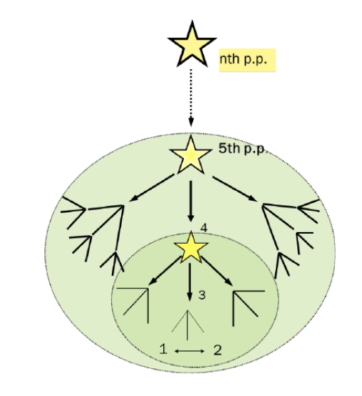
Figure xxxx, The increasing capacity for perspective taking on oneself
Much more will be explained later on in the separate chapters about each stage of development. It is important here to point out the potential confusion with how these terms are used in Wilber and in Action Inquiry (Torbert et alt. 2004). There they refer to a research method that advocates the interplay of the “I, we, and it” perspectives. In that context what is referred to as perspectives generally means the following: First person (my individual view and experience), second person (our shared dialogue, beliefs and conventions), and third person (the explicit objective and scientific study of a topic.
AL in AQAL stand for All Levels since all spheres of experience also show vertical development over time. Ego development occupies the Upper Left in Ken Wilber’s model. It explores the individual, interior growth of self-awareness. While the focus of the theory is on the individual interior, it fully recognizes that individuals only develop in dynamic interactions with self and others, language, culture and external givens and conditions. In Integral Psychology, Wilber (2000) describes the most common levels of development found in current Western society. More importantly for the field, he lists about a 100 versions of developmental notions from the distant past and from across the globe to current theories of human development in the appendix of Integral Psychology. The observation that humans change over the life span is ancient and is best known in its rudimentary form as the riddle of the Sphinx: What walks on 4 legs, 2 legs, and 3 legs?
According several sources the metaphor of the iceberg works especially well to highlight the distinction between the quadrants that are visible exterior and objective from those that are mostly invisible, and subjective, intangible, i.e. below the surface.
Figure xxx: the Four Quadrants
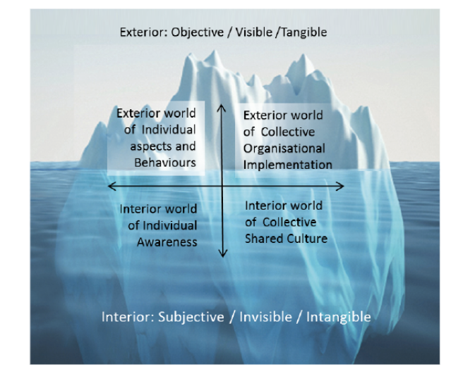
The table below shows how Ego Development Theory ranges over the main waves of development as elaborated by Wilber: It covers the preconventional, conventional, postconventional and early post- postconventional (or ego-transcendent) ways of meaning making. The comparison table is meant to give a sense of both the fine-tuned differentiations in Ego Development Theory and its overall fit within the integral model. Despite the appearance of this diagram, the theory is not to be seen as a simple hierarchy, or a stair-case like sequence of clearly separated levels which describe all human beings.
Figure xxx: comparison of several development theories from Integral Spirituality
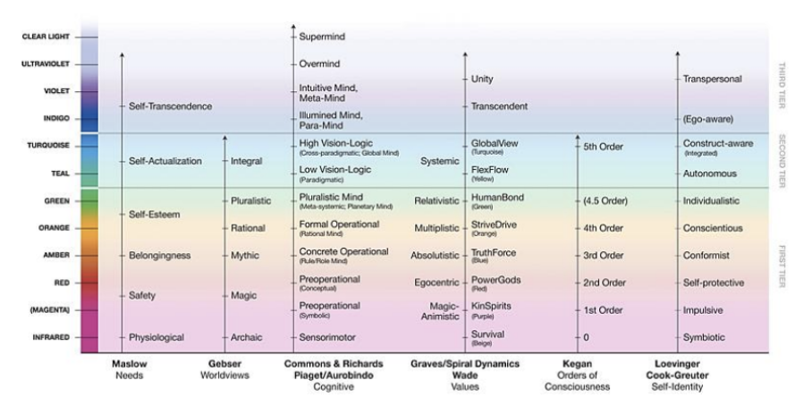
Using tiers in the table above (or what looks like rungs on a ladder) is just one common way of how developmental models can be represented and displayed. There are other useful ways of depicting vertical growth including the spiral and the arch (see Figure xxx and xxx respectively). According to my understanding of the nature of symbolic representations, all mathematical models, diagrams and figures are abstractions. They help to explain specific and partial aspects of the underlying experience, but they each have their unique limitations. Thus, multiple representations of the same phenomenon give a better approximation of what we are charting than any one by itself. Still, it deserves repeating, none of the theories and their visual representations can do justice to the complexity and mystery of living in human form.
Let me reiterate another important point. Not just Ego Development stages are idealizations, the levels identified by other researchers are as well. The differences occur because different scholars focus on different aspects of the human experience and behavior. Ego Development Theory describes the ideal outcome of healthy development for each increase in perspective taking and integration at a higher altitude. No individual fits all aspects of these descriptions. The sequence serves as a road map, as a way for individuals to orient themselves about how they currently see reality and themselves. This roadmap is based on empirical evidence about how self-identity evolves over time. It shows what individuals at a given stage have already mastered, what characterizes their new level and likely meaning making now, and what their growth edge and potential for further unfolding might be towards greater maturity and wisdom. Though helpful, the roadmap is not writ in stone as people travel through life in many different and meaningful ways.
In addition, we find as a rule that the later the stage, the more varied ways there are to embody a particular framing of reality as more and more capacities and resources come on board. The image of a widening spiral is often used to indicate the increasing breadth. Moreover, nobody is at one or another stage 100%. Although a person may test as having his or her center of gravity at a specific stage, we always see a distribution of responses over at least 3 levels. Wide distributions over 5 to 6 stages are not uncommon. The shape of the distribution can be more informative about a person’s current propensities and potential for further growth than the final MAP score by itself. Most people show a trailing and a growth edge around their center of gravity with lesser tails also often part of the distribution. We consider the trailing or secondary stage as a place people employ or fall back to under duress or because is it functional for certain demands of everyday life. The growth edge can indicate to what degree an individual is in transition to a new understanding of reality.
General Aspects of Ego Development Theory
Ego Development Theory currently maps nine levels of increasing embrace16, a phrase we have used in earlier version of a white paper outlining the characteristics of the stage sequence. Each level or stage represents a distinct, qualitatively different, uniquely defined, and increasingly complex view of self and reality. As indicated below, we define two preconventional, three conventional, three postconventional, and one postpostconventional or ego-transcendent stage. The last stage is a catch-all stage for what is likely several more distinct levels in human consciousness evolution. Since the theory is based on empirical data from a sentence completion test, the method itself created a constraint as the short verbal stimuli rarely elicit ego-transcendent responses. At the time of my first data collection (1980-1995) there were not enough Unitive stage completions to make finer distinctions at the ego- transcendent level. Although we have gathered again as much data overall since then, I still don’t see enough new distinguishing markers to describe further differentiations on the growth trajectory. 17
Naming the stages
Since we have adopted Torbert’s 18well-known stage labels used in business and non-academic contexts, we list them below for comparison and ease of reference. Depending on the audience, we use either set of terms. In our observation, two stages (Stages 2/3 and 4/5) express the same underlying structure of meaning in two significantly different ways.19 The difference is not obvious in Torbert’s labels, thus we use both Loevinger’s and his to more adequately reflect the different forms of self- expression. We also see two different foci in the postautonomous Stage 5/6, although they seem more sequential than two equal expressions of the same mindset. We use the term Unitive throughout for the latest stage in our theory because Torbert’s respective label, the Ironist, is regularly misunderstood and creates questions to what it actually means and how it relates to ego-development.20
When doing research we prefer Loevinger’s more scientific terms with one exception. She called the Expert stage 3/4 (her I 3/4, E5) Self-aware. There is little self-awareness present at this level as the conscious, separate psychological self is just being discovered. Self-conscious as a stage name expresses the characteristic of this level far better than Loevinger’s choice of “self-aware” as the individuals labor to find and define their own identity and are quickly defensive when they don’t feel seen. Overall, we also adopted Loevinger’s practice to spell the stage names with capital letters to distinguish them from their same-sounding adjectives.
Table 1. Comparative Labels
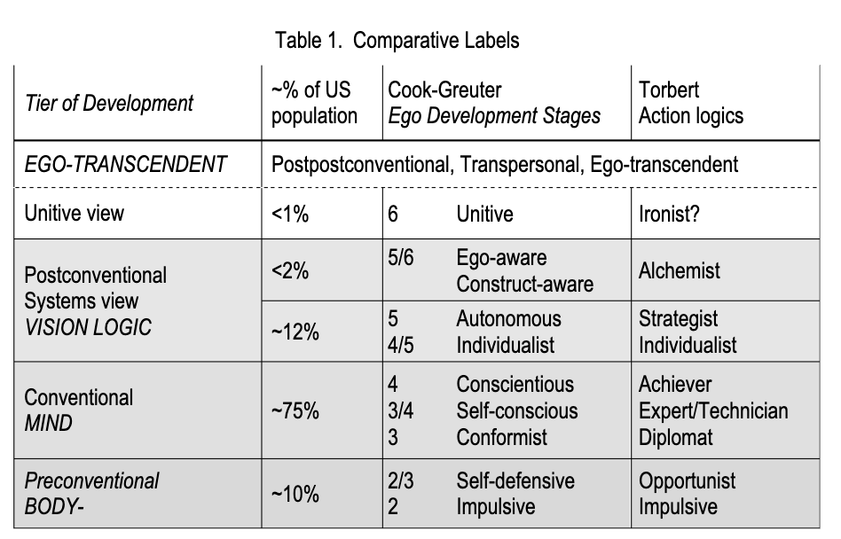
Choosing labels for the stages has turned out to be one of the thorniest issues across the field of adult development. Ideally labels give a hint of what is characteristic of a given stage yet without adding associations that lead to misconstruing them. An example in our case is the label Expert for the Self- conscious Stage 3/4.21 Being at the Expert stage does not mean that one is necessarily an expert in anything. It is more a description of the held values and the self-identity that is defined by them.
Metaphors we live by
At CLM we use the terms “earlier” and “later” in discussing stages to counteract the subtle bias of the value-ridden terms “higher” and “lower” which belong to our embodied metaphors. “Higher” is inevitably perceived as better because from grades, to quality descriptions it does mean “better.” Notice also the specific sequencing of terms, higher comes first. Once one starts thinking about embodied metaphors in everyday speech one is amazed at their insidious and subtle influence on meaning. We do use the designations “higher and lower,” however, in constructive developmental research contexts and statistical analyses because this is the convention for science. Let me give you one more telling example from our field. That higher is better is also part of the vertical versus horizontal growth distinction. Bodies that are vertical or upright, that is, they are up and standing while those who are horizontal are dead or at least lying down, a much less vigorous “stance.”
Directionality
Human development can be described in many ways although most current theorists see it as evolving in a spiral fashion. With increasing growth and maturity, the spiral broadens to include new information and cognitive capacities as well as new ways of seeing the self. At each level, old experiences and dilemmas are being reworked and mastered in new ways. From a constructivist perspective, what changes are not the basic challenges that human beings encounter in life, but the relationship to these challenges that a person can have. Similar topics are revisited yet approached with increasing capacity for perspective taking and with more resources available to deal with them. Wilber coined the felicitous phrase that perfectly summarizes this notion: "it hurts more, but bothers you less."
Despite the overall evolutionary directionality of development, individuals move in all directions as indicated in the Figure xxx below: Adult meaning makers may remain in a steady state or in a plateau for a number of years or even for a life time. They may expand horizontally and add new capabilities at the same level they are already inhabiting. They may transform vertically to new ways of seeing reality. And they can regress to earlier meaning making stages.
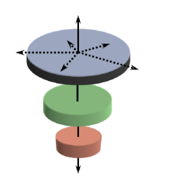Figure xxx: Horizontal, and vertical up and down moves in human development
The MAP-test identifies the center of gravity. We define the center of gravity as that level of ego maturity to which a person has consistent access to under ordinary circumstances without special support conditions23 or without unusual stress. In other words, the measured ego maturity stage is the one that a person reliably and routinely uses in response to everyday life. At the same time, we have never encountered a distribution of responses that was narrower than three levels. Often responses span over four, five and rarely over the whole range of possibilities. Indeed, for healthy, advanced ego development we expect flexible access to a broad range of responses across the stages, not just late- stage material.
Most growth in adulthood seems to occur within a given stage, variously described as lateral or horizontal development or “translation” in Wilber’s terminology. The current way of viewing the self and reality is refined, enriched, and modified to include more diverse domains, more contexts and detail, and to establish more connections among them. We learn new skills, new methods, new facts, even new ways of organizing knowledge. The later the stage, the more room for such horizontal expansion exists while the current stage or mental model of the world remains the same
Although rarer, upward vertical development can occur throughout life. In that case, the whole previous meaning system is transformed and restructured into a new, more expansive and inclusive self-theory and theory of the world. It is estimated that it takes about five years to move to a new level if circumstances are favorable and the person is open to change. It takes minimally a year of a well- designed developmental program for some participants to shift to a new level. A very well-written study by Manner and Durkin (2004) has convincingly shown that interventions need to be targeted a step or two above those for whom they are designed. Otherwise there is little change. Even if we see gains in ego maturity, we can never know whether it was the well-conceived program that promoted vertical development or one of the many other factors that support growth in adults. Being already on the cusp of transformation, that is starting the program already in transition, major life events, or simply the innate potential for growth can also prompt vertical movement.
Ego Development Theory is a theory of self- identity and how it forms and changes over time. It includes horizontal development as well as the potential transformation from one view of reality to a broader, more inclusive one. It describes a sequence of how people’s mental models of reality evolve. Each new level contains the previous ones as a subset. This is best illustrated with a set of Russian dolls, where each doll contains another, smaller doll. Thus, each new level is both a new whole with its own coherence, and – at the same time -- also a part of a larger, more complex system.
Figure: Russian nestling dolls
Coping strategies including defenses
For continuing growth, both support and challenge from the environment seem to be necessary. It is important to acknowledge the powerful means we have to resist growth when challenges seem overwhelming. As part of the psychological make-up, human beings have developed defenses that help us manage threats from both external and internal sources. Some defenses derive from the reptilian brain in response to physical threats or perceived threats to existence such as the flight, fight or freeze reflexes. Other defenses are more psychological such as, for example, denial, projection and rationalization as responses to more emotional and mental disturbances. Defenses are vital for survival and for coping with stressors. They tend to become deeply and viscerally anchored in our behavior as unconscious habits. Sullivan (1953) defined defense mechanisms as a way to screen out phenomena that do not fit people’s already existing views of reality. Even when we become conscious of challenges to our way of seeing things, we can often filter them out by selective inattention. In Loevinger inimitable words, “the ego maintains its stability, its identity, and its coherence by selectively gating out observations inconsistent with its current state – granting that one person’s coherence is another person’s gibberish.” (Hy & Loevinger, 1996, p. 4).
When our current meaning making system is disturbed, we tend to deny or ignore the intrusion in order to remain safely with what we know. The greater the perceived threat, the more we may cement our current way of seeing things by actively denying or rejecting it or by simply not paying further attention to it. While denying that something threatening is perceived may be maladaptive, putting it on the back burner, so to speak for later processing, can be an adaptive move. But life urges us again and again to solve disorienting dilemmas and discrepancies by responding with an enlarged and broader perspective that allows the issue to be solved at a new level of understanding. As Einstein declared, “Problems cannot be solved at the same level that created them.”
When the choice is between safety and risk, we can either open up to the unknown and explore it despite the anticipated discomfort or remain closed. We often operate under the false assumption that it is better to stay with what we know than to face the unknown even if the status quo is not ideal or outright toxic. While Sullivan defined some of the defense mechanisms, George Vaillant (1993) first saw their potential as means for coping and described the preferred defenses along the ego development journey. In general, the later the stage, the lesser the need for defensive maneuvers, that is, for experience to be different than it is. Ego Development theory predicts that different stages of maturity will have different capacities and choices regarding defenses.
Suffering and development
What I am not claiming is that suffering is a prerequisite for transformation, yet it often accompanies the move to a new level. The crucible of loss of loved ones, serious illness, disasters and other “slings and arrows of outrageous fortune” are all potential levers for reorienting and restructuring our understanding of ourselves and the world. Fear of the as-yet-unknown can hold us back from unfolding. Defending against life’s challenges can get us stuck. Many of the defenses serve to protect us against imagined or anticipated pain by conscious deselection or unconscious habit. Yet not fully engaging in life’s ongoing challenges constitutes another form of suffering. It was famously summarisedby Henry David Thoreau as “the mass of men lead lives of quiet desperation.” Ongoing development requires that we say “yes! to life” again and again and again.
All major change can create anxiety as we are habit creatures. Growth includes the unknown, sometimes intimated to some degree, other times utterly unimaginable. While possibly exciting, stage change is also likely accompanied with considerable discomfort, pain, loss, and uncertainty. Most aspects of living include relationship to other people – people who may be attached to the familiar way we were and who wish us to remain “familiar.” Moreover, our own strongly held values have to be renegotiated when we enter a new view of reality. To put in sharp relief, we assert here that with each transformation we are actually entering a new reality with its own rules, patterns, and language.
For this reason, the relationship to almost any concept can be shown to differ along the developmental path. A person’s understanding of power, feedback, time, love, integrity and truth, for instance, changes with increasing development.
Although we observe the use of more mature defenses along the developmental spiral, maladjustments and pathologies of all kinds are possible throughout the course of life. We have found narcissistic tendencies to show up at all stages, but especially in highly differentiated, articulate, and otherwise discerning individuals who hold positions of power in their arenas of influence. Given the ego’s need to assert itself, it is not surprising that superior intelligence and the holding of more enlightened values can create a sense of entitlement. However, we notice that the capacity to notice and let go of even one’s most cherished assets -- which include access to complex reasoning and transpersonal insights -- is directly related to one’s ego maturity and self-awareness.
The Language Habit and its Centrality in Measuring Ego Maturity
Ego Development Theory was built on and relies on the observation that the meaning making capacity of individuals is reflected in their language. We find again and again that the later the stage, the ever more subtle distinctions people can make. At the same time they can also “bundle” experiences into more abstract and overarching concepts. See my thesis on Comprehensive Language Awareness (1995). It provides the rationale for why I believe this is so.
It stands to reason, that changes in language over time inevitably influence what people will be able to address in response to sentence beginnings. The MAP therefore has to respond to and integrate changes in cultural shifts, language patterns and new concepts (memes). The manuals that are the cornerstone for measuring ego development thus also have to develop and reflect such changes. This is regrettably so from the perspective of the market place as well as in the eyes of those who want certainty and stability in psychometrics. While we continue to argue that a developmental measure itself has to be adaptable to the changing cultural and linguistic currents and the actual evidence gathered, we are aware of the potential disadvantage of holding this view. The world of psychometricians prefers variables to remain static, immutable and repeatable over long periods of time. Just look at the MBTI which has been shown to have marginal validity, yet is a measure used world-wide. This is not all bad news because, like the Enneagram, it seems to support people in expanding their appreciation and tolerance for personality differences in themselves and others.
Social discourse as changing over time
What once may have been an indicator of a certain later level of development because of its erstwhile rare occurrence -- such as referring to diversity or equality -- has become part of the common parlance of many people. Because there are now laws about gender equality and diversity, people at all levels pay at least lip service to them at work and in response to trigger stems that address men’s and women’s roles on the MAP. The historical-cultural perspective is additional reason why we are more cautious about associating particular values with particular levels. Formerly later stage concepts have been adopted in all kinds of contexts at various levels of understanding. To wit, references to spiritual growth24 are now part and parcel of the advertising industry. Reams of self-help books and programs promise quick success in attaining spiritual awakening.
Structure and content, a vital distinction
Constructive developmental theories distinguish between structure and content. Structure looks at the way a person responds to life, at what objects appear in their awareness, and how they frame that awareness. Content refers to the choice of topics and concepts a person mentions. Looking for deep and surface structure is another way of expressing this distinction. Ego Development Theory postulates that almost any concept can be looked at through a developmental lens from feedback, to intimacy, to power, to specific values. What a particular concept or value means depends on the user and his or her relationship or view of a it. It is for this reason, that we delegate “values” often to the content category as they do not tell us how a person enacts a given value only what they espouse. Chris Argyris (1977) introduced the important distinction between “espoused theory” and “theory in action.”
What I declare as my value can take many different forms of enactment. For example, I can tell you that I am an animal lover who hates the idea of animals being caged and experimented with for any reason. I can then act upon this value in various ways. I can free monkeys from a medical animal lab by destroying the lab and even killing people who tend the facility. I can do research on how to better respond to the animals’ emotional and physical needs in research labs. I can work on and change the legal system to ensure a reasonable treatment of such animals. I can go on the barricades and publicly protest but do so with peaceful means. I can also be a person who can balance the need for such research, with the need to treat animals with respect and care, and to minimize their use only if there is no other way to find answers to a medical issue. Ego development looks at what a person feels or thinks is right action in response to a given value they hold and what actions they take to express the value.
So far I have covered how Ego Development Theory fits into the overall field of constructive developmental theory, and argued for the centrality of language in evaluating people’s meaning making. I also offered some distinctions and general observations relevant to understanding Ego Development Theory. In the following I will address the central concept of “ego” in Ego Development Theory and its functions. The detailed descriptions of the stages and their sequential emergence then make up the bulk of this essay.
Ego Development proper
The concept of Ego
Some aspects of Loevinger’s and my use of the term ego and Kegan’s “self” seem similar to Freud’s superego (e.g. the development of impulse control, managing affective states, and conflict resolution). However, I use the term “ego” here to denote the underlying principle in personality organization that strives for coherent meaning and orchestrates how we perceive reality. “Ego development is the term for the common element in the stage sequence and the corresponding dimension of individual differences” (Loevinger, 1993, p. 6).
I use the term self interchangeably with person and individual whereas by ego, I distinguish two functions: ego as process and ego as representation (see Funk, 1994, p. 15) The ego as process is the more unique conception. The ego as representation (the I and the me as one’s identity) is a result of the synthetic, integrative function of the ego. It describes how one’s understanding of self and one’s identity develops over time according to a set pattern. The created identity thus changes with the changing levels of integration. Interestingly, rare high-end SCTs seem to reflect the possibility of becoming a witness to both the ego’s efforts at processing and to the changing results of the process of “identity formation.” The fundamental arbitrariness and limits of defining and reifying experience were introduced earlier and will be taken up again as a separate theme in the validation study.
Ego as the storyteller
I have introduced the notion that all terms we use are initially arbitrary, then become common coinage by consensus and usage. The term “ego” is no different. It isn’t a real thing that we can point to. It’s a term we use in our culture for something that we agree can be felt in a psychological sense, something that operates in us. It common speech and in some spiritual schools “ego” is referred to as something bad as it is associated with egotism or self-centeredness.25 When used in that way, ego needs to be curbed, brought under control, left at the door or even destroyed. Yet as simply a psychological concept it can be researched and its function understood and shared. Thus, a clear definition of what we mean by it in this context is essential.
Based on Loevinger’s practice, Ego Development Theory uses the term “ego” as the central and overarching concept. She translated Freud’s “ich” as ego. According to Loevinger, it is ego’s function to ceaselessly interpret experience and to try to make coherent sense of it. If you prefer the hard sciences, you can think of ego as the central processing unit. If liberal arts are more your style, ego as the story teller names it well. Ken Wilber talks about the self-system (a term introduced by Sullivan), which is a very similar notion to ego as the story teller, or the metabolizer, and integrator of everything that appears in consciousness.
Loevinger (1976) in her major theoretical contribution on ego development cites Fingarette (1963) as one of her sources for defining the ego. He first characterized the ego as the psychic organizing function or the synthetic principle in meaning making. He postulated that the psychological construct of the “ego” is at the core of creating and maintaining a coherent world view. He defined the ego as “the autonomous drive towards meaning making” (p. 86). The ego represents the striving of human beings to understand themselves and the world they live in by fitting new experiences into their current meaning system. Overall, the ego labors continuously to create and maintain coherence and it vigorously defends against dissonant stimuli.
Fingarette concluded that when the ego fails in its mandate to create meaning, humans suffer anxiety, which is the dread of non-being or a basic sense of meaninglessness. Thus the ego is at the very core of meaning making, constantly integrating and absorbing experience and classifying and finding order in everything that touches the individual both externally and internally.
We agree with Fingarette and Loevinger that “the search for coherent meanings in experience is the essence of the ego or of ego functioning, rather than just one among many ego functions. The ego maintains its stability, its identity, and its coherence by selectively filtering out observations inconsistent with its current state. In other words, Ego Development Theory tells us something about how a person interprets whatever they are conscious of and can take as object. We postulate that the ego is the meaning maker or story teller par excellence, or whatever name we choose to give this force in us. It selects, orchestrates, integrates, and metabolizes experience throughout life. It also exerts its influence all the way up in vertical terms into the transpersonal realm. What changes is the relationship of individuals to their “ego.”
In summary, Ego Development Theory is a theory about meaning making. Making sense of experience seems to be one of the fundamental drives in human nature. This need for meaning is irrepressible and ongoing. Its ranges from the earliest beginnings of rudimentary distinctions that the baby starts to make even in utero up to the most elaborate explanations of consciousness development into the transpersonal realm. Story telling about who we are, and how we see reality is not just an individual aspect of meaning making, it is also a shared activity of groups.
Ego as representation
When we speak of ego as representation we refer to as “I” and what I consider to be me or myself . It includes one’s self-identity and self-definition. Ego development theory thus is a story about how one’s self-identity can radically change over the course of development. It is a theory of identity formation.
Lines of development and the ego
Ego Development Theory is consciously looking at the whole person and does so in a comprehensive way. There are many more developmental theories that measure cognitive complexity alone or focus on other specific lines or domains of human development than theories that deal with meaning making and the whole person. While important in understanding differences among people, the different lines do not explain why human beings tell stories about themselves in the first place whatever the line. Lines do not illuminate what each stage looks and feels like as an integrated structural whole.
Even though Kegan’s The evolving self (1982) is closest in intention to Ego Development Theory, it is based on Piagetian notions and addresses primarily the growth of the mind. It focuses on the move from subject to object as the central mechanism for growth. It does propose a logical sequence of invariant stages through which adults develop. Nonetheless, Subject-Object theory does not identify as central the unifying drive to make sense of experience by constructing a coherent story about it.
Not surprisingly, most research in the field of constructive developmental theory focuses on cognitive aspects of development and the complexity of reasoning about whatever the test makers present as stimuli and tasks. Cognitive theoreticians can rightfully claim that their measures are more robust in their narrowly defined domains than measures that try to assess broader areas of human being. This is so because, the narrower the focus in general, the easier it is to create tasks to measure the target features in question and the more robust the resulting statistics.
However, the following must be raised as a concern: It seems that most of the cognitive developmental theoreticians and psychometricians pay no or very little attention to the constructed and “abstracted” nature of their measurements. With the exception of Wilber (1985), they are not focusing on the underlying linguistic assumptions no matter how complex and formidable their frameworks. The less grounded and the more abstract (“pulled away” from experience) the algorithms for measuring something are, the further away are the resulting metrics from the actual underlying lived experience. These authors tend to bemoan an instrument like the MAP as fuzzy or even pronounce that meaning making is not measurable. Einstein supposedly had a sing hang in his Princeton office that read: "Not everything that counts can be counted, and not everything that can be counted counts."
In addition, there is the problem that knowing about something has little relationship to being able to integrate that understanding into one’s living and being. A trend we call “aboutism.”26 One can learn to reason more complexly about a moral dilemma, for instance, or pass a test on Wilber’s AQAL theory. Yet such knowledge can remain espoused theory rather than theory-in-action as defined by Chris Argyris and David Schoen (1977). According to these authors, people are guided in their actions by mental models about the world, that is by tacit, unexamined maps or a set of unconsciously held beliefs, assumptions and rules. These are rarely congruent with the explanations that people give to themselves and others to make sense of why they do what they do.
What does Ego Development Theory offer as an explanation of the human condition?
Metaphorically speaking, Ego Development Theory provides us with one possible account of how individuals navigate the straits of human existence by using navigational lore, common sense, increasingly complex maps, algorithms, and intuition.
Ego Development Theory describes a psycho-logical (sic) system with three major interrelated components or dimensions of meaning making. It tries to give answers to a set of essential questions that describe the experience of being a human being as shown in Table xxx below.

Table 2. Questions about thinking, being, and doing at each stage
The operative component looks at what adults see as the purpose of life, what needs they act upon, and what ends they are moving towards. The affective component deals with emotions and the experience of being in this world. The cognitive component addresses the question of how a person thinks and reasons about him or herself and the world. It is important to understand that each stage or emerges from a synthesis of doing, being, and thinking.27 While cognitive capacity seems to be a prerequisite for continued growth, it is not sufficient for gaining ego maturity. Many very smart people who score high on intelligence tests, score at the conventional levels of ego development precisely because maturity and wisdom are not the same as complex reasoning applied to solving specific cognitive tasks.
The major difference of Ego Development Theory from other constructivist developmental theories consists in the broad understanding of ego as the story teller and integrator of all aspects of a person’s awareness. Howard Gardner (1985) first introduced the notion of multiple intelligences or separate lines of development. There are numerous specific tests that measure various lines. They are also given much attention in Wilber’s AQAL theory. Ego or what Wilber used to call the “self system” integrates them all into an overall worldview or take on reality.
Human beings are whole persons. They make sense in a comprehensive way, always aiming to be able to explain their overall experience by creating a coherent narrative. The existentialists were perhaps closer to understanding the need for meaning than many people working in the adult development field today.
On the other hand, we can also focus on what innate proclivities, favorable circumstances and external supports enhance the capacity of individuals to synthesize a self-supporting story from the myriad, constantly changing challenges and demands of life and to live a life full of vigor and forward motion.
They realized that small disturbances can be dealt with our defenses whereas anxiety is the results of a deeper malaise. It’s the absence of meaning resulting from a profound incapacity to make sense of life over a prolonged period of time.
The basic human drive for differentiation and integration
Human development in general can be looked at as a progression of different ways of making sense of reality or in a sequence of stages of meaning making. The stages follow each other alternating between those that emphasize, on balance, differentiation over integration and those favoring integration over differentiation. It’s a matter of relative preference, however, not of an either/or situation. In Ego Development we observer this pattern of ongoing differentiation and integration both overall and from stage to stage.
In the mid-sixties psychologists first postulated that human beings individuate by continuously renegotiating the balance between differentiation and integration. Angyal called it the innate double trend towards autonomy and homonomy. He defines homonomy in this way: “Homonomy is the wish to be in harmony; with a unit one regards as extending beyond the individual self. The … whole may be represented ….by a social unit—family, clan, nation—by an ideology, or … by a meaningfully ordered universe” (1965, p. 15). We know this polarity also by other names, such as separation and participation; mastery and relatedness; independence and connection; or agency and communion.
The image of a spiral below represent the differentiation-integration trend in development especially well. Overall, we account for this pattern as follows. Stages 3, 4, 5, and 6 , that is the single number stages on the left side of the diagram represent stages of integration. People at these levels are embedded in a specific holding environment. They move from identifying with others who are externally alike to oneself at Stage 3, to the like-minded at Stage 4, to the like-principled at Stage 5, and to the like-spirited at the Unitive Stage 6---where spirit is seen as radiant in all sentient beings. People at these more communal or collective stages are generally more at ease because they feel connected in ways that fits their current cognitive, emotional and transactional needs. This is in contrast to the uneven numbered stages of differentiation. Because of the nature of separating oneself from a previous embeddedness, there is more discomfort and more uncertainty.
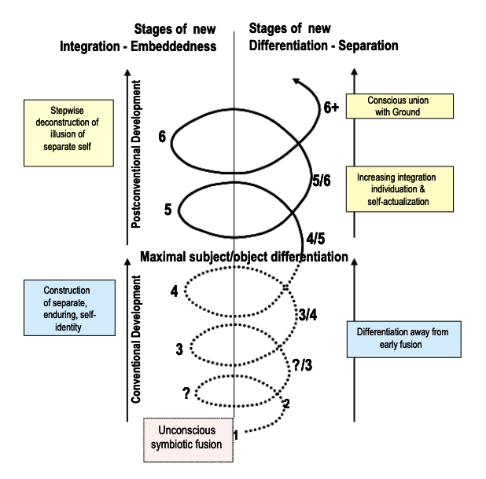Figure. Alternating Stages Of Differentiation And Integration
Stages 2/3, 3/4, 4/5, and 5/6 Stages called or Self-protective, Self-conscious, Individualist / Pluralist, and Construct-aware respectively are stages of differentiation. Individuals at these stages can step back and distance themselves from the previous known holding environment. They take on a new and greater perspective. They tend to assert their newly won independence and often reject prior ideas of what constitutes the good life. At the same time they generally express some distress because of the loss of the connection and certainty they leave behind.
The same spiral figure also depict the move from conventional to postconventional meaning making as an overall shift from increasing differentiation to a greater and greater integration of personality and meaning making. Unlike Integral Theory , we find that this transition is as or more fundamental than the transition between first tier and what AQAL refers to as second tier.
An overall shift from differentiation to integration also marks the transition from conventional to postconventional stages. The first two tiers of development constitute a movement away from the symbiotic embeddedness of the newborn towards greater and greater separation and independence. Said differently, development from birth to adulthood shows an overall trend of increasing differentiation towards an independent, well-defined, individual self-identity or self-authorship.
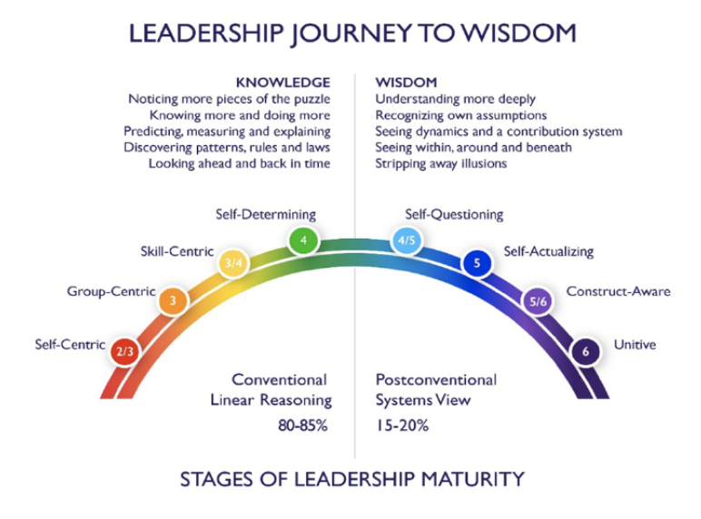Figure 3: The Arc Human Development (current stage names)
This movement is equally evident in communal cultures. Piaget first postulated that formal operations -- the Achiever stage in this model -- is the adult stage per se as it allows for differentiated, analytic functioning and reasoning within the parameters given by a specific society or culture. From the conventional Western perspective, the acquisition of this scientific, rational frame of mind is seen as the goal of socialization and schooling and defines what it means to be seen as a fully grown adult. The postconventional stages (from the Individualist Stage 4/5 through the Unitive Stage 6) show an overall trend of assimilation and integration towards an ever more conscious sense of unity with the ground.
By most modern expectations, fully functional adults see and treat reality as something preexistent and external to themselves made up of permanent, well-defined objects that can be analyzed, investigated, and controlled for our benefit. This view is based on a maximal separation between subject and object, thinker and thought. It epitomizes the traditional scientific frame of mind that is concerned with measurement, prediction, and control. It also represents the goal of much of Western socialization and schooling. Most adults (including many developmentalists are not concerned with the basic arbitrariness of defining the objects. They are quite unaware that according to Koplowitz "the process of naming or measuring pulls that which is named out of reality, which itself is not nameable or measurable.”28 They assume that subject and object are distinct, and that by analyzing the parts one can figure out the whole.
In much of the research literature using Loevinger’s ego development framework “advanced” ego development refers to the self-authoring Achiever stage since today’s modal stage is somewhere between Expert and Achiever. (See Manners and Durkin, 2004). Thus helping individuals who make meaning from the Diplomat and Expert stages to move to the self-regulating Achiever stage is seen as a central task of society and its institutions.
Later (higher) is not necessarily better than earlier meaning making, it’s a matter of optimal fit
Unlike other theories which propose and describe later stages as ever more ideal and better ways of being, EGO DEVELOPMENT THEORY shows how each new stage has its own strength and deeper insights as well as its stage-specific vulnerabilities and new forms of unhealthy expression. As Loevinger noted a long time ago, later is not happier or more adapted. On the contrary, with greater awareness comes also greater awareness of unresolvable dilemmas and paradoxes in life. As emphasized before, from a Construct-aware perspective, it is useful to give multiple representations of the same territory of experience as various representations point out different areas of focus and their dynamic interrelationships.
Mapping the Expansion of Self-Awareness: From Birth to Ego-transcendence
None of the other developmental theories seems to pay quite the same attention to the phenome- non of the evolution of perspective taking even though the capacity to take multiple perspectives is mentioned in almost all theories as a mark of more advanced development.
I will use this structural indicator as one of the most salient markers by which to gage a person’s level of consciousness. Knowing what order of perspective a person can take, helps to anticipate what a they can see and process regarding both their internal and external reality. The above figurative representation of the ongoing “ramification” and increasing capacity for perspective taking is fleshed out in more detail in the following separate stage descriptions. These answer the questions in Table 2 as to what is likely to be observed at each stage in terms of complexity of action, affect and thought. We intend to show that each level relates differently to these various aspects of reality. Indeed, one can say that each stage constitutes its own reality.
Specifically, I will address the following:
A summary description of the nature of each tier: preconventional, conventional, and postconventional.
- A figurative representation of each separate level of perspective taking in sequential order - Chief new capacities and differences to the prior stage - A description of the present type of self-identity - Cognitive capacity - Level of internal awareness and emotions - Relational capacity - Main concerns and available coping strategies - Some language clues
Bell-like distribution of stage
To begin with, it is useful to understand that the distribution of Stages has a bell-curve like shape. Early and late stages occur much more rarely in adults than the conventional and early postconventional ones. The samples below represent different selection criteria. The newer samples come from more professional groups or from individuals who selected to take the MAP instrument on their own accord. The inclination to find out about one’s own personality make-up via testing rarely occurs before the Achiever stage. When MBA students at Boston College -- who had taken a sentence completion test in the admission process -- were given an opportunity to request feedback on their results free of charge, Diplomats and Experts chose not to engage.
When claims are being made that we are on a tipping point in humanity’s overall consciousness evolution, we have to be cautious about what sample of people we look at. The table 3 shows the distribution of stages in 4 different populations based on different selection criteria. The often cited 10% for this shift is not a robust estimate based on any actual data. It’s more of a hunch – and a hope.
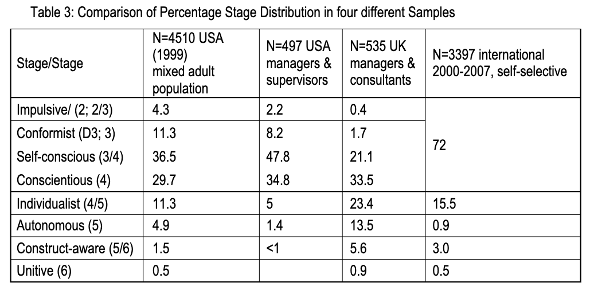Most publications use my dissertation numbers (N=4510) too give a sense of the overall distribution of stages. It is the most diverse sample available so far. It includes priests and prisoners, accountants and artists, and subjects spanning ages 18-82 with the middle 35-65 being the most represented.
From Symbiotic unity to Unitive embeddedness: The evolution of meaning making in adults
What follows is a description of how each stage is a whole structural unity in itself as well as a part of a larger, more complex and integrated way of looking and acting in the world. Each stage has its own stage-specific achievements and triumphs over earlier stages as well as its specific limitations and vulnerabilities.
The earliest tier, the preconventional, is rarely encountered in professional contexts as we expect these to be traversed in childhood and left behind as main modes of functioning. However, they reside as experiences in our memories and serve as fallback positions in times of extreme duress. At later stages, we also have access to them in more skillful ways in order to maximize the support and influence we have on those at earlier levels who may need clear boundaries and “behavior manage- ment” to function in society. It is seen as a sign of later stage capacity if one has access to prior stages and can choose to employ their strengths depending on the context and the need of the situation.
Overall we will give a general description of each stage which addresses cognitive, behavioral and affective aspects of a person at the given level. A diagram represents the current level of perspective taking and summarizes chief aspects of that level’s meaning making.
THE PRECONVENTIONAL STAGES
Because it is a theory of adult development, Ego Development Theory does not focus on infant and child development about which there is ample literature on both the micro and macro level and in all areas of interest. I mention these vital aspects here briefly for completeness. There is wide consensus that human beings are born undifferentiated and symbiotically merged with their initial caregivers. Good adjustment in adulthood depends on the successful solution to the problems of these earliest periods in life including developing a separate self-identity as well as adequate psychosexual, intellectual, emotional, social and moral development.
Infants also have not yet acquired verbal language. All development from birth to the beginning capacity for language is subsumed in the Symbiotic Stage 1 in Loevinger’s theory.
We follow her tradition and just mention Stage 1 briefly. The Impulsive to Self-protective adult stages are next. These represent a child’s normal maturation from age 2 to about age 12 as well as stages of “arrested” development in adults. We introduce Stage 2 as representative of adults who have already achieved a vital move out of the very earliest totally dependent infant days. They are beginning to use simple verbal language. They can express their most basic needs-with crying, making noises, pointing to themselves and to things they want or recognize. When things don’t go their way, they often have temper tantrums or hide. There is as yet little impulse control. Adults at the Impulsive Stage 2 can generally only survive under the protection of others or in institutions. Mentally delayed and seriously emotionally disturbed individuals are among those adults needing life-long support and protection.
A good percentage of adults in some cultures operate from the Opportunist Stage 2/3. Natural disasters, social upheaval and war are some of the threat conditions that invite or may even demand opportunistic behavior for survival. The “Rule-oriented” stage between Self-protective stage 2/3 and the Conformist stage 3 is included here for theoretical reasons as well to show the step-wise evolution of perspective taking. While common in adolescence, it is very rarely seen in adults and not included in the stages of the LMF.
To figuratively represent the increasing perspective, I will use the following symbols:
The Symbiotic Stage 1:
Cognitive: 1a nominal actions30 Perspective on the self: none
Self: Con-fused, confounded, undifferentiated self
Others: not distinct and separate, but simply sources of survival
It is at this stage that infants first begin to construct a stable world of objects for themselves. In doing so, they separate themselves out as objects in the world as well. They can now refer to themselves as “Bobby wants” or “me”. According to the conception of language as a fundamental aspect of meaning making, the self sense develops in conjunction with the cultural context, the shared language and values as well as the outer reality. These are inevitably intertwined31. Development does not happen outside of a viable environment. Strands of development later quite distinct are very much undifferentiated at this stage
The Symbiotic stage is not represented in the Leadership Maturity Framework or in the MAP32 or in Loevinger’s work as adults at this stage are likely pre- or nonverbal and usually institutionalized or completely dependent on the care and protection of others. They do appear in the work world as clients and patients and their care requires great patience, inner strength and compassion. If cared for by people at preconventional stages themselves such as in prisons, the care givers exploitative and abusive tendencies may need monitoring.
The Impulsive Stage 2:
The first person perspective = 1stpp
Cognitive: 2a Primary actions, sensorimotor stage
Self: rudimentary, physical self-labeling “me, mine”
Differentiation: in crude dichotomies
Others: needs fulfillment on demand, actions directed towards getting although there is little understanding of how to get what one needs.
Children at the Impulsive stage are governed by their impulses; hence this is called the impulsive stage. They make sense of the world entirely through senses and movement. They don’t have many ways to deal with setback, yet they may notice and react when they don’t have enough of what you want, or when things are away33. Mom is there holding you and feeding you, and then, it’s over and she puts you in your crib. At this stage, you’re totally dependent upon others, and if you’re reasonably well cared for, you make sense of being alive by feedback from your sensations. Magical ideas prevail and a sense of unlimited power exists only curbed by punishment from or withdrawal by those who have more power than you. Punishment is not related to one’s behavior but perceived as random or retaliatory and as imminent in things. Adults at this level show signs of the beginning use of language simultaneously with the emerging ego as reflected in such statements as “I want.” They assert their budding sense of self by such words as “no,” and by expressing ownership “mine.” Like young children, adults at this stage are governed by trying to fulfil their basic needs. If these are not met, the Stage 2 persons have little recourse other than crying, screaming, or withdrawing into themselves. They are easily overwhelmed, feel abandoned. The general tenor of this level is a profound sense of helplessness.
It is the first stage that is measured with the MAP, and reflects the first person perspective. This means, people at this level can only look in one direction. The inability to grasp fully some of the verbal clues in the MAP instrument marks the limited understanding of the world characteristic of this stage.
Other people are simply seen as objects who can gratify their needs, not as people with their own needs. Good people give to me, mean ones don’t. There is cognitive simplicity together with verbal limitations. The impulsive individual has an inadequate conception of the complexities of adult life and of the world and readily appears confused, anxious, and overwhelmed.
In most cases individuals at this early adult stage need protective custody, live at home with their parents or in institutions. They need legal guardians as they cannot make decisions for themselves.
Main anxiety: not yet differentiated out. A constant and vague sense of threat and insecurity is ever-present.
Language Clues: We find very simple statements: things are good or bad, clean or dirty; people are nice or mean. Present and past tense sentence stems are not distinguished. Subjects are unable to understand and respond to the longer stems such as “crime and delinquency could be halted if –“ Affects are expressed in bodily terms rather than as feelings. When I get mad, I see red. Repetition of a few simple ideas is the most conspicuous sign of the Impulsive stage. Many protocols contain the same or almost the same one word completions to several stems. A lack of affect and a helpless tone is also typical of this level.
Self-Protective or Opportunistic Stage 2/334
First person perspective with an energetic target
Cognitive: 2b preoperational actions
Self: single concrete features, minimal action-based self- description in terms of what I want
Other: a beginning sense of others as having their own wants and competing for goods, space, dominance, and power
This is a stage of differentiation, of emerging out of total dependence on the care of others. At the prerational, preoperational stage children learn to talk with more than one word sentences and begin to use symbols, but they don’t yet understand cause and effect or the general rules regarding how the world works. For this reason, even adults at this stage of development tend to use magical thinking to make sense of the world and their place in it. This mindset may work adequately especially in certain cultures and subcultures (prisons), which is why some people stay at this stage, sometimes for life time. In the modern world, most people at this stage are disadvantaged and considered “uncivilized” while as developmentalists we would say “not yet socialized.”
This stage is familiar to most people from watching or dealing with young children before they enter kindergarten. For a time, everything becomes a test of wills for two-year olds. Tantrums and hitting are the result of a thwarted will as well as a reaction to conflicting needs and frustrated desires that cannot yet be internally negotiated. At this stage, arguments and logic are useless. These behaviors are also common in adults at the Self-protective stage. They are not capable of insight into themselves or others in a psychological sense. But they have a greater sense of what works and what doesn’t, who they can and who they cannot manipulate than the earlier, more helpless stages. Their actions have not only directionality but a target. They know that the only way one can get what one wants is by controlling others and protecting oneself.
We distinguish between the Opportunist and the Self-protective expressions of the same worldview depending on the individual’s physical power and temperament.
The Opportunist version of the Self-protective stage is aware of his or her physical strength and size (or status power) and may use it to intimidate others in order to get what they want. Opportunists are generally wary of others’ intentions and tend to anticipate the worst. Everything to them is a war of wills. Life is a zero-sum game. It is important to realize that much aggression may stem from profound uncertainty, a sense of vulnerability and being confronted by a world whose rules they may not actually understand. In a self-protective move, Opportunists may be aggressive to pre-empt expected strikes of others. They are people of action, not of thought and planning.
On the other hand, those who are shy and physically less strong and able to defend themselves fit the Self-protective form of this level. Because of their greater strength and the supremacy of males in many cultures, it is more often women who inhabit this world. 35 They focus on protecting themselves and not becoming a target of others’ aggression. It is ironic that individuals at this level are rarely seen. They are invisible because hiding is a common and sometimes temporarily successful way of dealing with their vulnerability to being bullied, abused and exploited.
Self-protective adults of both forms are careful to maintain their essentially fragile selves. The self is not yet a separate adult self, but one synonymous with one’s will, ideas, wishes. The self may be felt as having two sides, an inner real self, and an outer self or “a false face” in order to shield oneself. This can lead to secrecy, underhandedness and deceit. If others knew what I wanted, they would have power over me. Self-protective people need to resist the will of others, to test limits and to assert their own control be that by acting big or by withdrawing. Because there is a beginning ability to anticipate reactions in others, this is the first stage with an emerging awareness of others as separate people or “objects.” The Self-protective stage thus acquires the rudiments of conscious social interaction. “If I understand what others are after, I can better work them to get what I want.”
Feelings. Persons at this level often “get into trouble.” Trouble happens inadvertently when you cross a boundary. Self-protective folks try to look out for trouble and to avoid its consequences.. For For both Self-protective and Opportunistic persons, the world is a hostile place rife with danger. Rules are recognized, but mostly followed for immediate advantage or to avoid punishment. Being clever and grabbing opportunities is necessary for survival. Self-respect is experienced in relation to the amount of control one can achieve in opposition to others. Self-protective individuals often think they are the odd person out. They may feel isolated, but do not know how to relate to others differently. “It’s always me against the rest.” This creates a self-perpetuating dynamic of very low trust and hyper-vigilance. In a social context, they are often invested in concrete visible world of “things” one owns. These are meant to demonstrate one’s position of power from tattoos, to clothing, to fancy boy toys.
Morality: When Opportunists lose a test of will, or overstep a boundary, they see the cause as outside themselves. They get frustrated and tend to show free-flowing anger and hostility. Others are to blame, never oneself. Their own anger towards the world is projected outward. Thus others are experienced as angry all the time. Self-protective people have an expedient morality. Actions are only bad if one is caught and punished. When caught, people at this stage are shameless and show little remorse. They do not feel responsible for failure or trouble they cause because they do not yet understand the connection between action and consequences, that is, linear causality. Blaming others for one’s shortcomings is a way to protect oneself. Stage 2/3 individuals rely on luck tokens and magic to protect themselves. Individuals who choose dangerous, but dangerous jobs often represent the positive, daring aspects of this stage. Some firefighters and test pilots, for instance, are known to carry lucky charms, and are often described by others as loners. They may also inhabit later stages.
Interpersonal: Self-protective individuals especially the Opportunist type tend to cause much friction and hurt feelings wherever they go because of the “I win, you lose” mentality. This is especially so in relationship to others at more conventional stages. In turn, others describe Opportunists as unpredictable, unreasonable, manipulative and exploitative. They resent the “brutish” and “egocentric” behavior and may call them names. Nonetheless, it is possible for Opportunists to achieve considerable career success. This is especially common in contexts where a good nose for business opportunities presents an immediate, short-term advantage and where unilateral power is given some respect. This form of dealing with others is therefore often part of gang culture and prison hierarchies.
Social: Self-protective people are not well embedded in social networks and do not understand subtle human interactions that are not based on power differentials. Their relationships with others tend to be volatile. Friendships blow up easily. Feelings are externalized and projected outward. We see little expression or reflection on their own emotions both because of a lack of insight as well as for self- protection. Showing weakness of any kind is dangerous. “The more others know about me, the more they can take advantage of me.” Thus, most Self-protective individuals tend to express general hostility and readiness for fight or flight. Those in specific high-risk jobs (test pilots, prison guards, firefighters if they make meaning from the Self-protective stage, must rely on their buddies to survive and may therefore have mutual protection pacts. Cognitively smart individuals at the Opportunistic stage, may be able to present a noble mask saying all the right things, mentioning pro-social values, but act out as soon as they perceive any threat to their wishes and power.
Depending on their own stage of development, Opportunists are often charged with immoral and self-serving, manipulate behavior that they ought to stop. As developmentalists we counter, that it is not a matter of will or wanting, but a lack of understanding that the Opportunist displays.
Cognitive style: Thinking is concrete and dichotomous, based on global, undifferentiated judgments, and simple ideas. Things look black or white. Others are either for me or against me.
Preoccupations: Favorite themes are those of domination, gaining control and advantage, and deceptive maneuvers. On the other hand, Self-protective people are always fearful that someone else is trying to dominate, control or deceive them. Internal dimension: Self defined as what one does or wants to do right now rather than in terms of psychological states or plans and longer-term goals.
Problem solving “This is your problem, not mine.” “I don’t care.”
Defenses: Self-protective adults use blaming and a system of distortions to minimize anxiety and maximize good self-feelings. Their defenses or coping style is immature: Fantasy, acting out, projection are the most common ones. All causality and all-important psychological action is seen to be part of the constantly threatening outside world. (See Vaillant’s hierarchy of defense mechanisms).
Depression: There must be something wrong if I can’t get what I want. I hate it when I am feeling controlled and constrained. Sadness may be expressed in aggression towards self or others.
Main anxiety: Threat of annihilation or enslavement.
Sample character: “Archie Bunker”-types. They are self-protective, bull-headed and have tunnel vision, constantly blowing up and blaming others for what is happening to them. At times they have a biting humor that exposes others’ soft sides. Self-protective adults are concerned with their concrete little world, often thrilled with bodily aspects and satisfactions. They show prejudice; polarize arguments and exploit others’ weaknesses.
Language clues: Experience is described in simple dichotomies - good/bad, right/wrong, fun/boring or with concrete, physical words such as in “life is hard.” Often strong negative affect is expressed. Sentences are short with barely an explanation or elaboration. Opportunists may use physical terms for non-physical concepts and only differentiate among the simplest feelings such as feeling sick, upset, excited, and mad.
The Rule-oriented stage, Delta/3:
This stage is subsumed under the Conformist-Diplomat Stage 3 in LMF
The second person perspective
Cognitive: 3a primary actions
Self: single external features; beginning comparisons, one variable at a time
Other: I see the other and the other sees me and notices what I look like and what I do; beginning recognition that if I want something from others I have to make myself appealing.
The Delta/3 stage is included here because it shows the cognitive differentiation that occurs from Self-protective thinking to Conformist dependence and provides a logical link for mental growth. It is not included in our measurement tool, the MAP, because it is statistically rare as mentioned in endnote #7.
At this stage people vacillate between two points of view. They can take one or the other view, but not both at once. Sometimes they wonder “how do you look to me?” but newly also “how do I look to you?” They now recognize external differences regarding self-presentation and behaviors. Often children entering school are exploring this developmental stage. The Rule-oriented stage describes adults who are discovering the second person perspective and who begin to make simple, external comparisons based on concrete mental operations.
They become preoccupied with finding out the social conventions and rules based on the beginning need to fit in and to be liked. One wants to look “right,” and acceptable, therefore the emphasis is on external attractiveness and appearance. People at this stage show more trust in the world since acceptance and protection can be gained by following the rules. The world is experienced as less hostile than for Self-protective folks. Persons want to be “re-spected” which means, “seen” by others. Respect can now be gained by adhering to group norms, not just by might. One also gives respect to others in the form of noticing them and how they act and look. “People notice me when I am here. I listen to them, they listen to me.” With the second perspective, one discovers the possibility for simple feedback. One can find out what others think about one. “I can ask my friends what they think; they will tell; and the world doesn’t collapse! I can trust them.” The ability to take a second person perspective is a milestone in the development of social interaction.
At this stage, the superficial likeness to others is discovered and experienced as comfort. One is not alone! This new feeling is enjoyed in loose associations such as clubs, in which one shares similar action interests and hobbies.
Language clues: Rule-oriented subjects make simple factual statements, refer to concrete behavior and single features of appearance. They are passively responding to stimuli, trying to avoid getting in trouble, but uncertain how to do this. They may feel they have done something wrong, but they can’t say how or why. Overall their utterances often lack affect either positive or negative.
THE CONVENTIONAL STAGES
The Conformist, Self-conscious and Conscientious stages, stages 3, 3/4, and 4 respectively, cover the ego stages of most people after about the age of 12. We have found that roughly 80% of adults populate these three stages with most people in the adult working world moving from the Expert to the Achiever stage. In Piagetian terms, stage 3 represents functioning at the concrete operational level, stage 3/4 uses abstract operations and stage 4 individuals rely on formal operations for their meaning making. According to Piaget and the cognitive schools of constructive development, Conscientious stage 4 people have a linear view of reality: they define objects (variables) as being separate and having closed boundaries; they see causality as linear and variables are treated as independent.
The expanded 3rd person perspective with its formal operational capacities is widely considered the adult stage in much of Western culture; and society and institutions support and reward its achievement. It is also the stage that is described as “high” ego development in research projects that use Loevinger’s theory only (Manners and Durkin, 2004). A citizenry capable of rational deliberation and choice based on pertinent criteria (not external features, sameness or tradition) would seem to be a necessary precondition for democracy to work. Only such a perspective and rational assessment of choices can safeguard the whole and at the same time allow changes to be reflected in the laws.
The Conformist Stage 3 (Diplomat)
This is a stage of integration into a new social container. At the Diplomat or Conformist stage, people make sense of the world in a new way. They now have developed enough skills to get around in the world, accomplish the daily tasks of life and, in general, manage ordinary, concrete things and situations. They now actively want to play by the rules. Expanded second person perspective (2nd p.p.)
Cognitive: 3b concrete operations
Self: several external features; vital statistics given; rudimentary internal states, conflict avoided or suppressed
Two types of other:
1. own family, tribe, group, nation:
It is the first stage that can be considered as socialized, that is, to know about basic interpersonal skills such as sharing, and protecting one another. Most importantly, people at this stage see others as important people in their own right. They want to be like those in their environment whom they admire. We might say that they discovered the beginning of the “we-space.” They sing the choir of the crowd, yet without a separate voice. One can now trade magical, egocentric thinking for group-centric thinking and the security of being a member of the group. Being a part of a group gives people a new way to deal with the fact that “it’s hard to be an adult and get along.”
The Conformist stage 3 describes persons with a frame of mind naturally developed in latency and early adolescence. Their self-identity is defined by their relationship to a group. This leads to confused boundaries between oneself and the group (whether family, sports team, or nation). Being part of this larger entity allows one to be protected and share in its power. The price for inclusion is an unexamined demand for loyalty and obedience. This holds for both leaders and followers at this stage. In cultures, where ostracism is a form of severe punishment, being “shunned” is meant as a death sentence. “You no longer exist for us.”
Conformist adults actually relish the dependency that group membership bestows. It provides safety in numbers and a new sense of power. The self is defined by and generated by the expectations and values of those others to whom one “belongs.” Conformists tend to accept norms without inspection or questioning. Their cognitive world is divided into simple categories, and types of people, mostly based on external distinctions. Having a holiday table just like the one seen in a famous “best home” magazine, or owning a car just like one’s boss’s might really make a Conformist happy.
The boundaries between self and others, however, are confused, literally fused and blurred. On the one hand, there is total acceptance of the family and in-group (such as peer groups in adolescence), on the other hand, we see blind rejection of deviance and out-groups. It’s “them” against “us” now instead of the Self-protective person’s lonely stance of “me” against “them,” which included everybody else (even family members). For the Conformist, you are either ally and friend and approve of us and what we do, or you are the enemy. The more status the group has, the more Diplomats feel worthy as one of its members. If it took some effort to fulfill the required demonstration of obedience and submission, they feel honored to be admitted and wearing the insignia that tell others so.
Having a shared truth gives people a ready-made way to make sense of the world. Sometimes this goes beyond feeling valued as a member of the group. Some groups believe that their truth is the only truth. This fosters a sense of superiority. Members are told that they are the “chosen few” that shall be saved. All those who do not belong are doomed, considered heathen or barbarians, or whatever label makes them lesser or non-human. This kind of mindset is particularly common in various fundamentalist religious groups. They can judge harshly those who do not belong. It is difficult for someone whose self- sense is based on belonging to such a group to even realize that there may be others of different faiths who believe equally fervently that they have the only truth.
In general, Stage 3 people try to uphold tradition and to avoid rocking the boat. They are accommodating, sometimes overly nice and non-confrontational. They don’t like to be singled out and get feedback. Feedback is experienced as critique and as having done something wrong and displeasing. Diplomats expect guidance from above or from those who lead them. They are not yet ready to take a stand to express themselves. They don’t have their own opinions to assert although they may be good at expounding the values and beliefs of their group. Nor can they take initiative for themselves. They might do so for the benefit of their group when told to do so by an accepted authority. Uncertainty and conflicting feelings cannot yet be registered as they threaten the very being of a Conformist. The description of this stage in terms of “not yet” exposes a common Western bias.
Stage 3 persons have to keep up with the neighbors. They make sure they are seen in the right places (for instance, in church on Sunday) and with the right group. They are often eager to contribute to the group by volunteering (PTA, church social, men’s club) and taking on preset roles in their respective clubs. Acquiring material assets and status symbols is important as these symbolize status and prove one’s worth. Moreover, the visible assets are important because the provide real personal satisfaction and they indicate one’s success. Nametags on the door, being listed as the employee of the month show that one is noticed. Trying to keep up with fashion, neighbors and material gain can, of course, also become a burden and a source of unhappiness and stress.
Morality: Conformists adhere to a simple rule: “everything goes into two piles. The good, or correct, and the bad, or incorrect.” Knowing the distinction makes it easier to make sense of the world. Every decision, every idea, every person, every action, fits in one pile or the other. There are few, if any, shades of gray, no irony, and no intangibles. Actions are carried out with conviction. This is how it is done around here. “Either you are with us and agree or you are against us.”
Unlike at the Rule-oriented stage where simple rules are inconsistently adhered too, here rules are beginning to be internalized and followed without question. Shame is a common response to transgressions and for undesired consequences of one’s actions. Because of their strongly held and unquestioned values, Conformists are apt to feel responsible in situations in which they are not to blame. Repeatedly saying “I am sorry” is meant to soften any repercussions. One should have done the right thing all along.
Conformists are identified with and bound to those with the same tastes, attributes, beliefs and expectations, and confused or threatened by differing demands, perspectives, diversity, and complexity. The values of one’s own group get introjected as strong “shoulds,” while the values of those who are different are denigrated and likely rejected as “evil.” Thus, life is governed by rules of what can be and cannot be done. Others with differing views are morally condemned. Sexual and aggressive feelings are likely denied or suppressed out of fear of rejection and abandonment. For the same reason, commandments from various religious are taken in as the Truth and not examined. The “holy books” contain the literal truth. Any questioning of their commandments guaranteeing salvation is seen as a form of treason or a sign of having fallen from grace.
Social: To be liked one has to have an attractive social personality. It is important to be nice, pleasant, and accommodating. People are judged by the way they dress and talk and by the proper manners. Great care is taken on neatness, outward appearance, cleanliness of one’s domicile or office.
There are those whom by temperament, are more contrary. At the Diplomat stage, it is possible to find some sense of OK-ness as a non-conformist. Rebels, have-nots and other misfits often need, find or create their own cliques. One can either be a loner or create or join an alternative group and display the markers that identify one as a member of that clique. This can happen because the individuals don’t fit the prevailing norms or do not have the tokens that would help them to belong to the high status group.36 Multiple cliques, such as fraternities and sororities on campus, often attract various kind ofstudents with a conformist mindset . Each has its own traditions with different acceptance rituals and admittance oaths.
Feelings: Blind conformism, fundamentalism and prejudice can be expressions of this early conventional frame of mind. Potential aggression against self (putting oneself down) and negative affect or disappointment are often countered by demonstrations of overly positive feelings and enthusiasm.
One’s negative feelings “I hate you” are split off and projected outside and then experienced as “they hate me.” Anger and other disagreeable feelings are suppressed as they threaten the status quo. They rarely reach awareness.

Conformists’ main coping moves are projection and introjection. They imagine that others think, want, feel what they themselves think, want or feel (projection) and then try to fill those imagined needs. They also swallow others’ definitions, norms, values and opinions without questioning (introjection). If my mother, the church, or the boss says so, it must be true.
To summarize, the Conformist- Diplomat does not yet have a self in the sense of a separate adult identity. Instead, he or she is defined by others. The self-other boundaries are blurry and not differentiated. Thus, relationships often have a dependent, “sticky, I-need-you” quality.
Interpersonal style: Because Conformists so desperately want to belong, they will conform to the rules and norms of whatever desired group, gang, political party they belong to. In companies they are the ones that smooth discontent or incipient conflict among coworkers and make sure that the place has a pleasant atmosphere. They value being nice and helpful. They see relationships in terms of expected behaviors (loyalty, being friendly) rather than in terms of deep feelings and motives.
Cognitive style: Conformists are interested in the concrete, visible aspects of experience and tend to use superlatives and conventional clichés to describe it. These clichés, however, are taken seriously and not experienced as clichés. References to inner feelings are stereotyped and predictable and aligned with cultural expectations.
Conscious preoccupation: Conformists put great value on appearance, status symbols, material possessions, reputation and prestige. They are concerned with social acceptance and attempt to adjust to group norms. They deeply care about other’s opinions and evaluations although they are not likely to ask for feedback. “What do others think about this or that, or about me?”
Internal dimension: Conformist individuals worry about what others think and feel at any given moment as their sense of self-worth depends on others’ approval. In protocols they express simple “acceptable” feeling states: sad, happy, nervous, upset, but do not differentiate feelings into subtler graduations. The sense of “shoulds” and “oughts” and sense of shame and embarrassment if those shoulds are not fulfilled can be crushing.
Main anxiety: not to belong and to be cast out. Most threatening to a Conformist is being disapproved by or deserted by significant others, rejected by one’s group. Their anxiety is thus a fear of being non-existing and the loss of a sense of self as a loss of “me-as-accepted-by-others.”
Problem solving: Generally, emerging problems are denied, or relabeled and white-washed. “Never mind that. If you look at the bright side, it’s not really so bad.” Asking a superior for what to do is the most natural way of dealing with difficulties. Conflict is not yet registered or if experience, it is avoided as too threatening. It can become great challenge to a Diplomat if he or she belongs to different groups with conflicting value sets. With today’s mobility and complex arrangements, this is becoming challenge for Diplomats is becoming more common.
Organizational type: Conformists seek acceptance and protection by a larger entity. They are most apt to be drawn into organizations with a clearly defined identity and hierarchical structures. Clear instructions, advice and guidance are preferred over freedom to show initiative. Thus, command and control enterprises such as the military are attractive.
Coaching-Counseling style: Conformists like to give lots of advice telling others what to do or not to do. They also tend to compare and evaluate others according to their own preferences where the way I manage or we do it here is the right way while other ways are simply wrong and need to be corrected.
Sample characters: Edith Bunker in All in the Family takes all kinds of abuse by others, particularly her spouse Archie, but she stays with him. She is fluttering and fussing around him, always trying to be positive, to see the best in everybody and in everything. Edith finds pleasure in taking good care of her loved ones. However, the character Edith also displays an open-mindedness which is not typical of this stage.
Language signs: The language is often impersonal, nice and positive and may be full of clichés. Short, stereotypical phrases, exaggerated positive affect are common on the MAP. Everybody and everything is fun, important, wonderful. When describing situations; concrete aspects and factual information is given. Conformists describe their and others’ behavior in terms of I “always”, we “never.” The vocabulary for feeling states is simple, undifferentiated.
The Self-conscious or Expert Stage 3/4
This is a stage of differentiation. A conceptual watershed is crossed when one can take the third person perspective.
pp. st 3rd 2nd
Third person perspective: Self and others as separate persons with unique differences
Cognition: 4a abstract operations; beginning ability to take a 3rd person perspective or to look at oneself objectively
Self: Separate self is differentiated from others; sense of specialness. Identity = clusters of external attributes, conventional traits, “self-conscious” in the sense of readily feeling uneasy and being judged.
Other: others too are seen as separate persons who are different from me. Need for constant comparison and measuring. Do I pass muster? Do others measure up to my ideas and standards?
The Self-conscious stage 3/4 characterizes people who are now able to step back and look at themselves as objects from some distance for the first time. This allows them to begin to notice patterns and to start to reflect upon their own and others’ behavior. This capacity to reflect on oneself , however, is as yet rudimentary as most of an Expert’s energy is externally focused.
This stage has a distinctly different clinical feel than earlier stages. Individuals begin to have access to some self-understanding. They now want to be different from others, be recognized as special. Often the work hard to differentiate themselves from the immediate family context and assert and express their newly discovered personhood. Experts also make sure that they are seen as different from their parents, siblings and from others doing similar things. They feel good when they are noticed and get the respect for what they know and can do.
The third person perspective permits operations with abstract objects and concepts. While conformism was widely spread during Loevinger’s time, we now find few people operating at the early conventional, Conformist stage in our subject pools. In the sixties, consciousness raising efforts on all fronts have contributed to this social shift from Diplomat to Expert as a desired and accepted shift in consciousness. Finding your own voice and becoming your separate self identity as an adult is the most widely supported and rewarded movement especially in the modern West with its emphasis on agency and individualism. The transformation from being a part of a group identity to finding one’s separate identity and finding one’s voice is in many ways the task of healthy adolescent development. However, it often becomes first necessary for doing well when one moves away from home and familiar environments or when one enters the work force.
At the Self-conscious stage 3/4 the focus changes to individual differences away from fitting in and being like those in the original reference group. People start to express their own personhood more often in contrast to others. They now also tend to assert their own needs and wants, which were suppressed at stage 3 for the sake of being accepted. Indeed the previous enmeshed self-sense is now experienced as a constraint, as a fake identity. Having played along with the prescribed values no longer feels genuine. Given this drive towards separation and individuation, Experts often leave the beliefs and values of their family of origin behind to the chagrin of those abandoned. They experience this move away from tradition as a puzzling and hurtful, or worse as a betrayal of their most cherished values.
Identity: The third person perspective theoretically also allows for beginning introspection. Individuals at the Self-conscious stage are now interested in discovering the kinds of behaviors that make them successful and respected. They start to describe themselves with slightly more differentiated attributes (lonely, jealous, curious serious), norms (feminine), and conventional virtues (honest, patient) than their Diplomat colleagues. That is, they start to describe themselves with common traits - generally recognized character patterns that people display over time. This new capacity to identify some special characteristics of oneself is enabled by a budding understanding of one’s life in linear time. One can see how one behaved in a specific way before and one expects to behave in similar ways again. One may even have an inkling of how one would like to be and make an effort to change.
Experts of first need to be taught to speak in their own voice and assert their position as well as to critically analyze matters as simply mouthing the opinions of those one respects is more common. Learning to notice their own suppressed and unexpressed feelings and thoughts is often the task of therapy and coaching for this group. Experts are sensitive, that is, self-conscious, when it comes to negative and critical feedback. Criticism is experienced as a rebuke of the whole person as Experts are identified with what they do best and in what they believe. They often display compulsive and perfec- tionist tendencies in their efforts to outdo themselves and to be a the top. “Good enough” is not good enough for many an Expert. While they feel hurt and threatened by criticism, they are swift with directing criticism towards others. It is the shortcomings, faults, and inadequacies of others that make life difficult in the Expert’s eyes. In addition to having special expertise and knowledge in an area of interest, blaming and finding fault with others is a chief way to establish one’s sense of superiority and power.
Cognitive: Because of the capacity for abstractions, adolescents as well as adults at this stage see multiple possibilities and options. They can use them with a vengeance -- offering innumerable solutions and permutations for every problem. What is missing is the capacity to prioritize, to see that not all solutions are of the same quality. Experts tend to focus on doing things right or correctly, not yet on doing the right things. That is they offer single loop solutions, rather than questioning their preferred approach. Indeed, their own way of doing something is seen as the only right way. Indeed, They are identified with knowing the newest and most cutting edge products and procedures in their area of expertise. The focus on detail is one of the reasons that Experts who are promoted to managers, often fail. They can’t see the bigger picture and aims of their department or organization and thus can’t prioritize accordingly.
Social: Experts may reject their family of origin or their childhood beliefs, yet they still need a reference group that accepts and respects them. Only now they want to be accepted by others because of how they are different and special. Expertise and knowledge are ways to distinguish oneself. Profes- sional peer groups and organizations thus supply the need for approval and belonging. Degrees, au- thorities, and reference books in the field also provide the needed support for defending one’s approach. However, feeling special can easily lead to feeling superior as one wants to stand out from the crowd.
The group is needed, but one stands at its periphery threatening to leave, without ever quite leaving.
Moral: Stage 3/4 persons often feel they have it all “figured it all out.” They know all the answers. They know what to believe. They feel righteous and tend to blame others and to put them in the wrong
They have high moral standards and a strong sense of what should be. “Shoulds” and “oughts” are part of their way of making sense of life and of orienting themselves. The super-ego is very strong. Experts may feel disappointed with themselves when they don’t fulfill what they know they should yet find excuses for why they didn’t perform according to their own values.
Work: Experts are often difficult for others to work with. They want to be single contributors and do not easily collaborate. Not only are they critical and often self-assured in their knowledge, they tend to be argumentative and hurt when they feel they are not respected enough for what they do or say. In general, they do not hold back their opinions as they do not yet realize that their perspective is only one among many possible ones. They know the truth, the best approach, the right way of doing something. Experts are happy in perfecting their crafts or procedures. Creating efficiencies, perfecting processes and steps to run things more smoothly, is part of their many gifts.
At the same time, the perfectionism can become their challenge. When they need to delegate a task they want it to be done their way. When it is not, Experts are quick at taking the task back and executing it themselves. Thus, they are often overworked and overburdened by their workload and level of perfection, be that at work or at home. They cannot yet conceive of the possibility that things could be done well in more than one way or that others could also do them adequately.
They tend to evaluate others according to their own capabilities and standards. Severe criticism of how another thinks is a common form of intellectual aggression at this stage. A sense of superiority is not very well hidden and is activated by the smallest inadequacy in others. Technocrats, bureaucrats and highly educated specialists, such as engineers and scientists in the hard sciences, are particularly prone to get their self-sense from identifying with their knowledge or expertise.
In interpersonal situations and at work the “yes, but” syndrome is very common. Having the last word or one-upmanship - that is, listening to the other and then adding one’s own opinion to remain on top - is typical.
Because their process is additive, people at this stage cannot yet prioritize among options or synthesize several possibilities. While Conformists try to suppress aggression for the sake of acceptance, it now reemerges. Self-conscious individuals often have a hostile sense of humor. Ridiculing others is a common sport. While there is a cognitive capacity to look inside, one’s defense is to be ultrarational. Rather than being followers or bystanders - the preferred roles of the Conformist - Self-conscious persons may relish being movers, and initiators. They enjoy oppositional battles with others who defend different positions. They live in a world where things are sure and clear, and they feel very much entitled to impose their views on others. Thus they can seem argumentative and opinionated.
On the plus side, Experts are concerned with fulfilling their adult responsibilities and duties and with doing things right. They are very adept at finding new and different solutions, better ideas, more perfect procedures, and greater efficiencies and doing things well. If managed skillfully, their positive contributions can be considerable. Experts are absolutely necessary for running the routine affairs of every society and every group. They may prosper especially well in today’s highly technological and digitally-coded world.
Impulse control: Self-conscious persons have societal shoulds and oughts well internalized. Their super-egos are strong and not available for inspection. Feelings of shame and guilt for transgressions are expressed in simple terms or rationalized away.
Cognitive style: Self-conscious persons are capable of abstract thought and operations, including multiple views, permutations, and careful comparison among variables.
Internal dimension: “Psychology” is understood in terms of stable moods and traits of self and others. Self-conscious persons tend to generate innumerable solutions without being able to prioritize among them. The decision process gets often hung up. See Perry (1968) on multiplicity. The necessary synthesis and analytical weighing of different solutions develops at the next stage.
Organizational type: Engineering types, technocrats, bureaucrats, and a percentage of professionals of every ilk are at home here. Being in charge of oneself and one’s environment is a chief trait. Self-conscious individuals have a clear-minded, pragmatic leadership style because they are unencumbered by fundamental questions and complexities. “Do what I do and you will be fine.”
Chief defenses: Self-conscious people intellectualize, rationalize and explain away what doesn’t fit their expectations or set beliefs. They are rarely lost for an answer or an explanation. They often blame the structure, the tools, or the incompetence of others for what is not working as it should.
Counseling/coaching style: As managers and consultants, they are asking many questions and accumulate facts. They want to know the causes and ask “why did you ? This can readily be heard by employees or clients as criticism and blaming. They proffer advice and share their opinions and interpretations without a sense that they are theirs and not necessarily the clients’. “If I can do it, you can” is a common message that shows the lack of awareness that people differ and that their way may not work for everyone. Compared to later stages, Expert coaching clients often seem more set in their ways and resistant to change. No one can tell an Expert anything they don’t know already or know better. They will discredit material or arguments that do not fit into their own schemes of how life works by dismissing counter-evidence or belittling others.
Main anxiety: Having just recently discovered their own separate personhood, Experts fear losing this sense of specialness. Moreover, they fear being reabsorbed and getting drawn back into the fold, into the mass of others. They also fear that if they should open themselves to others’ views, they might lose their current certainty and strong sense of self. This fear of incompleteness and vulnerability is often counteracted by showing a strong front and by not admitting any ignorance or vulnerabilities.
Language clues: Experts are beginning to use more complex syntax. The vocabulary for psychological states is becoming more nuanced. Simple comparisons are common “too much, not enough, similar to.” We find the rudiments of qualifications, conditions and explanations. There is a beginning, yet passive interest in causality “I wonder why?” Notably, there are now references to the passing of time “sometimes, often” and occasional brief explanation for their views although simply asserting how things are is the favorite mode of expression. Experts also now tend to consistently respond with the past tense to past tense sentence beginnings.
The Conscientious or Achiever Stage 4
The Conscientious stage is a stage of integration and re-embedding oneself in a larger cultural context, but now on ideological affinities and self-chosen criteria. It is the target stage for much of Western culture. Our educational systems are geared towards producing adults with the mental capacity and emotional self-reliance of the Achiever stage, that is, rationally competent and independent adults. Democracy as a form of government is based on the idea of a citizenry that has the capacity to think independently and to make reasoned and informed choices . Bob Kegan coined the felicitous term “self- authoring” for this level. Along with expertise, an independent, entrepreneurial, and self-reliant mindset is the financially most well rewarded stage in the US and much of the West.
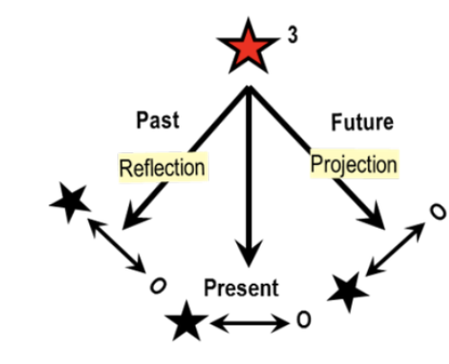Time -expanded 3rd person perspective
Embrace: Self in society, others with similar goals and aspirations
Time frame: Self as it is (traits), self as it should be (goals, ideals)
Cognition: 4b, formal operations; clear separation of subject and object, knower and known.
Preoccupations: Reasons, causes, goals, achievement, effectiveness, contracts and agreements.
Positive equilibration: rational, analytical determined, conscientious, fair; successful; competent with high self-esteem
Truth: Can be found through appropriate scientific methods if not now later
Our institutions of education, jurisprudence and much of business are based on the premise of independent adults pursuing their self-chosen interests within the given contours of the social environment.
The critical new dimension of the Achiever perspective involves a full awareness of linear time along with the need for broader relational social context. The third person perspective allows individuals to look backwards and forwards in life. Conscientious folks deliberately want to find out who they are and what they would like to become by consciously exploring past experiences and choices and thinking about the ideal future self. Five to ten years backwards and forwards is now a regularly envisioned timeframe. What do you see yourself having accomplished in five years? is also the most common prompt in conventional job interviews.
Moreover, this is the first stage where people grasp that they can continue to grow in mind and heart as adults. They have places to go, personal goals to reach, and opportunities for self-knowledge and self-improvements. Conscientious folks, cherish self-knowledge and work at increasing it. They generally have positive self-regard based on their capacities and successes. They have gained a measure of independence and self-authorship that makes them feel they are the masters of their ships. As captains of their own self-enterprise they are no longer as vulnerable to being accepted or excluded as Conformists and Self-conscious adults are.
Cognitive style: Conscientious persons can think in terms of formal operations, logic and sequential order. They are beginning to appreciate conceptual complexity as well as the nature of a closed system. They are aware of contingencies and qualifications, and see alternatives to conventional responses to problem solving. They can now notice contradictions and inconsistencies both within themselves and in the belief systems they adhere to. They may see that the way a problem is framed is the problem. They consider that not all goals are equally worthy of pursuing, that is, they may begin to recognize the potential for double loop exploration. Overall, Achievers are planful about their actions, concerned about priorities and consequence, and capable of revision and iterative assessment on as well as reorienting towards new goals.
Conscientious adults generally believe in the perfectibility of humankind and in the scientific method to “uncover” the laws of the universe. People believe that the proper scientific methods of investigation and procedures will eventually lead to the discovery of how things really are. They look for the laws that explain human behavior as well as answers to how the universe works. Formal operations and abstract rationality are at their peak at this level. Much of the world’s scientific progress is generated from this mindset and with the drive for discovery that is quintessential for Achievers.
In many contexts, the Achiever mind set and capacities are not fully appreciated for what they offer, and for what they continue to contribute to human well-being and prosperity. Conscientious adults are committed to work towards the betterment of humanity according to what they consider an ideal future. Whether they believe in democracy, communism, socialism or whatever form of government ideology, they are convinced their particular approach is best for all.
As scientists they have more tolerance than Experts for some delay between action and results, research and findings, questions and answers and are less likely to believe that they can go it alone. Cross-department or cross-disciplinary collaboration is necessary to untangle and solve some of the more complex puzzles of the external world.
Formal operational cognition allows individuals to separate events into variables that can be sorted around many criteria. Achievers and beyond recognize that making new distinctions is an aspect of expanding one’s mind and internalizing new knowledge.
Making new distinctions is also a bedrock of EGO DEVELOPMENT THEORY as it uses distinctions in language to trace the development of individual minds and to differentiate among different mind sets and self-identifications shared by many people. It is these changing ways of shared worldviews that we identify as consecutive stages. As a psychometrician, Loevinger and her approach to theory making and testing shows the formal operational tenets at their best. She made a pioneering and lasting contribution to psychology. At the same time, keeping sharp boundaries also limited the reach and usefulness of her method. Proof was paramount to her and keeping the SCT-test for research only as she created it. Using it in other contexts, for example for coaching and supporting clients in vertical development was anathema to her., She also objected to using the SCT to explore rare hypothesized high-end levels of meaning making because it went against her belief in what science is and should do.
Aboutism: Because of their access to formal operational thinking, Achievers can create complex theories as well as learn all about complex topics. However this is done from an external point of view: They can learn to know everything there is to know about a theory without transfer of the conceptions to their interior life. Thus, one can pass a test in integral theory, for instance, and yet hold the theory as an Achiever. In ED Theory we call this external knowing about complex theories “aboutism.” High intelligence and access to cognitive complex thought can seduce individuals to overestimate their ego- development. Accordingly, cognitively-oriented developmental theories and measurements also tend to privilege sheer intellectual prowess, memory, and the complexity of arguments over a more holistic, integrated view of personality. ED Theory offers a view of development that includes an assessment of how individuals hold the knowledge they have and how they relate to their knowing. It offers a path that not only values intelligence, but a way of looking at human growth that values self-awareness, compassion and wisdom.
Identity: Persons at the Achiever stage are curious what makes themselves and others “tick” in more than a passive “I wonder why?”-way. They will actively ask to find out what motivates others and explore causes of both their own and others’ behavior. While Experts are proud of themselves and their cleverness in their area of expertise, Achiever are more aware of their overall career path and how they got to where they are. At the same time, they trust in the potential to improve themselves through effort, learning and feedback. Feedback can now be listened to without necessarily agreeing with it or feeling one’s whole identity has been diminished. Whether the critic is right, misinformed, or misjudged me, the their response is useful information both about myself and about the critic.
In general, Achievers are concerned with reasons, causes, goals, consequences and the effective use of time. They believe that the truth about themselves can be found and are motivated to figure things out and to inquire. Personality tests, asking others for feedback, Taking educational and professional courses and retreats as well as a new level of introspection lead to increasing self- knowledge. Achievers learn to understand themselves backwards and forwards in time, and describe past feelings, personal dreams and future goals. While the past is seen as an important source of information and experience, Conscientious folks tend to focus on the future and what is yet to be accomplished. With awareness of time as a linear progression, there is also a greater capacity to observe one’s motivations across different periods and in different actions. “Why do I do what I do?”
Thus, the analysis of others and self-analysis become a favorite pastime and challenge. Many typologies and theories about human behavior come out of this motivation to classify and understand other human beings. From psychoanalysis, to behaviorism, to Rogerian therapy, to Gestalt approaches, many of the major therapeutic schools were born out of the Achiever mindset. Knowing the root causes and reasons for unwanted behavior helps one to fix problems and to achieve better outcomes. Indeed, finding the causes and working out explanations for what one observes are paramount for the scientific, modern method of inquiry and knowledge acquisition.
Emotional: It is at this level also that individuals become able to distinguish in much more subtle ways among different aspects of being a human being. They realize that we can deliberately dissemble and that it is important to distinguish between appearance and feelings, what is being said and what is left unsaid. Formal operational cognitive capacity is behind this capacity as it allows for variables to be separated and sorted around many criteria. A sense self-certainty common at this level comes from the notion that one can improve oneself. Because people can and want to explore feelings that don’t yet fit their current understanding of themselves, they are more likely to explore these rather than to deny, or ignore them, or project them onto others. They may still employ these defenses, but more areas of experience are open to inspection. Many become familiar with their own preferred proclivities and defenses. Because of their understanding of linear time and knowledge acquisition, and because of their ability to prioritize, Achievers can now postpone exploration and put things on the back burner. If they do notice discrepancies between their values and behavior, they can learn to deal with tensions in more productive ways than before. Some mention that they consciously use negative energy for a positive push. For instance, anger at injustices in the child welfare system can be used to make a difference by organizing a letter campaign, writing to a congress person, or joining or forming an advocacy group.
In contrast, when life doesn’t go so well -- when there are disappointing results or even “failure” to achieve goals make a difference or to -- Conscientious meaning makers can be very severe critics of themselves and fall into deep despair. As self-authoring individuals who accepted that they are in charge of their own destinies, not being successful is taken as a sign one has not done one’s best or betrayed one deepest potential. That is, one has not just failed the particular cause, but one’s duty to oneself as a full member of adult society. This exaggerated sense of being responsible for how things turn out may lead to feelings of guilt and inadequacy. This is so even when external circumstances contributed to the unsuccessful outcome. What is not yet visible to Achievers is a more systemic view of reality. They see themselves as independent wholes rather than also interdependent parts of multiple, overarching systems. Additionally, seeing positive results and get rewarded for them is an important way the Achiever finds self-affirmation. The long-term view, the idea of having sown a seed which may or may not take root is not yet enough as an Achiever’s timeframe is often at best a decade or two.
Moral: Conscientious adults have internalized societal standards. They often question the “shoulds” from their family of origins and their professional contexts and want to live according to their own ideas and self-chosen values. It is with the Conscientious stage that people have enough of a perspective on themselves as objects and on their life as changing over time to become truly introspective. “Do I live up to what I believe in?” is a serious life inquiry. Guilt for having made the wrong choices and regret for having missed opportunities are central emotions. When aggression is turned inside, self-criticism can be severe. Conscientious individuals can fall prey to hypercritical, neurotic self-criticism especially easily because their plans and intentions are so single-minded and high-aiming. At the same time, Conscientious meaning makers may have very high standards for others as well and expect them to be self-authoring and responsible like themselves. They cannot yet truly fathom that there are people with earlier, more limited perspectives, and less choice and capacity that they have. They don’t understand that an Opportunist will likely exploit the system if given half a chance not because he doesn’t want to but he cannot do other. They do not see that Diplomats will not likely thrive when given an opportunity to take initiative and to stand out via an individual contribution. They may get very frustrated with the single-minded drive of the Expert to perfect a narrow specialty without consideration of the bigger picture or the overall mandate of an organization. While excellent individual contributors, Experts often are unskilled in collaboration and cross-disciplinary efforts. Like their conventional brethren from earlier stages, Achievers too believe that if others were more like them, the world would be a better place.
Interpersonal: Because of the genuine interest into who others are and the concomitant need to share one’s experience, interpersonal relationships become intense and important. Social contacts become increasingly diverse and rich. Others are appreciated for having different expertise as long as they don’t encroach upon my beliefs. “Let’s leave our personal views aside” is a typical Conscientious- type compromise that keeps the definite boundaries between parties intact, but allows for collaboration. Increased self-differentiation and personal independence does not, however, involve more egotistical and self-centered behavior. On the contrary, others can now be valued for who they are independently of one’s own needs and wishes. One joins a group or cause as a contract in order to accomplish certain goals, to fulfill agreements, and to actively partake in the well-ness and governing of the overall enterprise. One’s loyalty is to a chosen belief system or ideology rather than to the individual proponents of them. Unlike Conformist and Self-conscious people, Conscientious adults function well in different teams and contexts concentrating on the task or problem to be tackled.
At Stage 4, people no longer rely so much on others in their original in-groups for knowing what to believe and what to do (Diplomat). Nor do they derive meaning primarily from their professional contexts and craft expertise although those may be appreciated like Experts. Rather than relying on knowledge generated and received by the thought leaders in their area of interest, now they choose how to proceed based on their own critical examination of what works, and what it important to know. That extends to the conscious choice of what kinds of selves they want to be, what values they want to commit to and what purpose they want to enact in the world.
Social context: In general, self-authoring adults realize that they need to cooperate with others in order to be successful and to get things done. They tend to associate with people who have made similar choices about what they deem important to accomplish and the kinds of goals they therefore want to pursue and realize. These associations reach across differences in upbringing, education, race, gender, and personality type. But diversity is not yet necessarily valued for its own sake even when it is defended on legal terms. “Let’s agree to disagree” is a common and practical Achiever motto. It allows people to bridge differences that could not be crossed at earlier stages. In order to accomplish what they feel needs to be done, they join existing groups who share their ideals and aspirations. Additionally, they may actively create a social entity themselves that fosters their view of reality and their dreams of what a better world looks like. Achievers now can belong to diverse groups at the same time with different agendas and characteristics without feeling torn among them or getting confused regarding competing loyalties. They can adjust behavior in order to fit in if necessary or take on a leadership position whichever is required. Especially in today’s electronically interconnected world, Stage 4 individuals join together with others in order to achieve specific aims. Such relationships are no longer confined by geographic proximity. Instead, projects and efforts to change the world can now have global participation and a global reach.
Achievers often feel an urgency as time is ticking. They are preoccupied with getting things done with responsibility, conscientiousness and expediency.. They may have a driven quality to accomplish something or to improve the world versus the need of later stages to develop oneself as an instrument of change. Issues of legacy and making a lasting contribution are important to their self-image. One hopes to see the results of one’s efforts yet can envision these also to benefit the next generation. The mood of the stage is earnest conviction, seriousness, idealism and enthusiasm usually oriented towards action and external targets. Those whose proclivity is towards thinking, may create complex theories of psychology or philosophy or dedicate themselves to research.
Conscientious persons change others’ minds by convincing them with rational arguments and evidence rather than by putting them down. Their self-esteem depends on achieving their own set goals and lesser on external affirmation and approval. For all that, the drive to succeed and achieve, can readily lead to over-extension and exhaustion. Achievers find it difficult to acknowledge their limits of time and energy. Engaged in their projects, they hardly slow down to look at the present moment, to reflect upon life as a whole, or to give themselves a break. They may resent others who make time to balance their lives or they may want to learn to do this better themselves. Work-life balance issues are among the most common complaints of this stage/
Given their cognitive capacity, Stage 4 individuals are in love with the hypothetical, with theories at the espoused level. They are convinced that society can be controlled and improved. They have the frame of mind where formal operations are at their peak and rationality, progressivism, positivism and reductionism have their strongholds. Not knowing or trying to figure things out is not an option. If they realize they lack knowledge in a particular area, they can admit to it and learn or rely on others who are knowledgeable in the area of inquiry.
For Conscientious persons in the sciences rationality triumphs! They are interested in analysis (ana-lysis = breaking up). Truth can be found if diligently pursued, if not now clearly over the long run. One can come closer to it by consistently applying the scientific method, by looking at things rationally, by continuously improving and refining one’s methods of inquiry and measuring tools. The electron microscope and the telescope are just two such tools that let us peer in into the infinitely small and the immeasurably large. While Experts tend to rely on authority or received knowledge to orient themselves (a renowned expert, or the newest trade journal), Conscientious individuals can be skeptical of conventional approaches. Researchers at this level are known for their intellectual skepticism towards things that are not yet proven. However, they do believe that the laws of the universe can be figured out eventually and proven.
Work: The life of an Achiever is often driven by an urgent sense that time is fleeting and that it is therefore a scarce commodity one has to use effectively. “Time is money.” Unlike the Expert who is more concerned with individual contributions and in perfecting whatever they are tasked with even if it takes forever, Achievers are able to prioritize among many tasks and steps in a process. They are also now capable of balancing the need for effectiveness with a desire for efficiency. The latter often allows them to truly delegate tasks to others. They trust that they can do a good job despite approaching the assignment differently than the delegator. At the same time, Achievers tend to overestimate the level of control human beings have. They see it as their role to make decisions with the best of intention to serve the greater good. Others may experience this as a unilateral and overbearing need for control.
Achiever values can include alternative life choices in reaction to what some perceive as the excessive focus on success at this level. “I don’t want to run in the Achiever rat race of success and money. I prefer to focus on family and a peaceful existence.” This reaction is not necessarily a matter of fundamental disapproval of the Achiever drive, as the alternative life choice may be just as driven by a need to be in charge. It is important to distinguish between non-conventional and postconventional ways of meaning making here. At the conventional stages, alternative life style choices are mostly a matter of individual preference. The serious questioning of the underlying assumptions of the achievement mentality becomes a focus at the next, the Individualist stage.
Because of their experience of linear time, Achievers sometimes acknowledge that they stand on the shoulders of others, that is, if they don’t revel in their own selfhood and being self-made men and women. Being in control is a very powerful aspect of being an Achiever and losing control is seen as a major threat to one’s well-being and self-identity. Thus much energy goes towards reaching one’s goals and remaining independent. Towards the end of a career and looming retirement, this becomes a unique challenge for Achievers as having to give up independence feels like losing the self
Moral: Societal values and morality are internalized if they fit self-evaluated standards and one’s personality. Conscientious persons tend to be self-critical, even hypercritical. They now may feel guilt for consequences of actions even when these were unintentional or unavoidable. They are self-reliant, conscientious, and efficient and preoccupied with attaining goals and ideals. They will bend or break rules in order to change social structures and to serve the greater good or their need for freedom. Whereas earlier stages break rules because they don’t like them or because they feel constrained by them in what they want to do, Achievers often offer valid justifications for doing so.
Interpersonal style: Conscientious persons have a sense of responsibility and obligation towards others even while they pursue their own agendas and ideas. They see themselves as indispensable and contributing members of the larger community or society, yet separate and responsible for their own choices. They are conscious of the importance of communication and appreciate the mutual expression of differentiated feelings and ideas.
Conscious preoccupations: Achievement of long term personal goals as measured by inner standards is important as are the attaining of one’s ideals and values. These are often the ones currently most salient in the cultural surround. Thus, the money motive and the focus on individual success of many Achievers fit very well with a capitalistic and the western outlook on reality.
Conscientious individuals are often also concerned with motivation and reasons for behavior. Many reflect on themselves and express more differentiated feelings or can now identify with contradictory traits. “I’m an optimistic pessimist.”
Internal dimension Achievers are interested in feelings, moods, traits, and motivations. “Why do I do that? What causes others to be what they are and to behave in certain ways? How can I use my knowledge of them, to help us achieve our goals? What do I need to know and do in order to get along? What can I learn as skills to become a better in conflict resolution or team management?” They are now open to continuous learning and self-improvement in a way earlier stages were not. The ways one can be an Achiever is astoundingly varied.
Decision making: When they take responsibility to do something about a recognized problem, they can move with conviction. They are concerned with how to get started. “How do you get people to help? What is the most efficient and effective strategy to get this job done?” Conscientious persons are willing to take risks and to fail to a degree in order to find out. When they are in charge, they feel empowered to make unilateral decisions in the perceived interest of all.
Organizational style: Alliances are task-related or problem-oriented. How one relates depends on the specific and one’s role in the group which changes in different settings.
Chief defenses: Intellectualization, rationalization, suppression of shadow are the chief ways the Conscientious person defends against doubt and criticism. “Better to concentrate on the positive and on what can be done than to dwell on the problems and difficulties.” “Better to say, I am sorry later, than not to act when opportunity arises.”
Depression: Conscientious persons most often suffer depression in the form of guilt for not having fulfilled their goals and ideals, for the loss of a sense of being able to accomplish them, and the ongoing and deep fear of loss of control and autonomy.
Fear: More even than Self-conscious adults, Conscientious persons fear the Conformist frame of mind with its dependency and “submission.” Blind obedience and uncritical absorption of ideas is seen as “bad-me.” Conscientious persons must make sure they are not pulled back, unconsciously subsumed in someone else’s scheme. Fear of loss of progress, control, and clear boundaries are overcome with action and relentless forward moving.
Counseling/coaching style: Similar to Experts, Conscientious persons tend to ask lots of questions. However, they also now inquire with questions like “How is it? What does it feel like?” What do you imagine would happen if…?”They have a greater ability to listen to others’ experience and play-back (restate) expressions without adding their own interpretation. They are also able to encourage others to discover their own solutions. In general, they are not yet aware of developmental differences and may therefore demand behavior that is in over the client’s head.
Language clues: Conscientious persons recognize and express conceptual complexity and explicitly refer to causal relationship, consequences and priorities. We find many terms related to time (efficiency, planning, goals, future) as well as implicit references to lapse of time (now, used to, when I was a child; is growing). Conscientious persons begin to describe themselves as complex psychological beings using differentiated psychological vocabulary. In MAP protocols one begins to be able to get a sense of the unique individual. “I” statements are revealing, not clichéd, and often contain elements of contrast, self-criticism as well as explicit ownership of responsibility. Achievers tend to frame choices in contrasting either/or terms.
The major limitation of the conventional mindset is its acceptance of facts and the external world as real and its blindness to the acquired nature of their beliefs. They accept the grand myth of conventional science that all problems can be solved with the appropriate technological inventions, if not yet, certainly in the future. Although complex scientific analysis is applied, the underlying assumptions of any system are rarely questioned or made explicit. Especially at this stage, knowledge, measurement and prediction are taken for granted as means to control nature, self and society. The attitude of certainty that permeates the Achiever mindset, changes dramatically with the move into the next, the first postconventional stage of development.
THE POSTCONVENTIONAL STAGES
The transition from conventional to postconventional meaning making is also signifies an overall, large-scale shift from increasing differentiation and the creation of an independent self-identity towards increasing integration and deconstruction of the separation developed in the first half of the growth trajectory. The visual representation of the overall contours of ego development referred to in Figure 3 is repeated here as a reminder
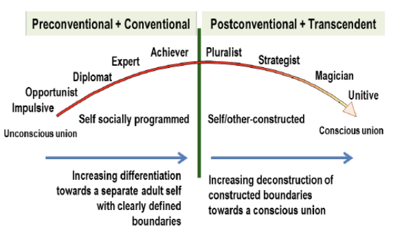The arc of adult development (corporate stage names)
The first half of the trajectory – from Symbiotic embeddedness to Achiever independence -- fosters the increasing separation from the newborn’s union with the mother towards the discrete, self-sustaining adult identity with clear boundaries, an self that is capable of making reasoned decisions, postpone gratification and pursue meaningful goals and purposes. It is this self-governing Achiever that is often viewed in the modern world as the fully developed “adult.” The second half of the trajectory – from
Pluralist to Unitive -- represents a step-wise deconstruction of the sharp and artificially created boundaries towards an ever deeper identification with all that exists.
The second half can also be likened to an ongoing individuation towards a more holistic, full- bodied, and integrated self that is fully aware of its interdependence with other systems and one that can take a perspective on its fundamental non-separateness. This movement can be usefully described in having two layers. A) The general systems stages which comprise the first differentiation and integration – from the Individualist-Pluralist to the Strategist stage. B) The second differentiation and integration – from the Construct-aware to the Unitive stage. The latter two replace Loevinger’s Integrated stage (I6 or E9). It is likely that Loevinger could not conceive of a self-identity with fluid boundaries because it was not part of her psychometric frame of reference. She may also not have discovered this kind of open, non-delineated self-view because it did not occur in her samples. To her, the concept of later stages and ego-transcendence belonged to the “stratosphere” (personal communication 1998).
A) The General Systems Stages
At the first postconventional level adults come to realize that the meaning of things depends on one’s relative position in regard to them, that is, on one’s personal perspective and interpretation of them. Although the objects themselves are seen as permanent, their meaning is seen as context- dependent. “Variables are now seen as interdependent, causality experienced as cyclical and boundaries of objects as open and flexible” (Koplowitz, 1984). It always depends on one’s definition of what is to be considered within a system or and what is outside. This view of reality is called the systems view because it allows individuals to look and compare whole systems of thought or organizations with increasing distance. Postconventional adults can become aware of their own unexamined beliefs. Interest in laying bare one’s underlying assumptions as well as those of the society is an important new capacity at these two new stages.
The Individualist –Pluralist Stage 4/5 represents systematic operations in Commons’ General Stage Model as a person can now look back at the previous belief system as a system. The Autonomous Stage 5 expands cognition to metasystematic operations as people at this stage are now able to integrate different frameworks of the self into a coherent new theory of who they are, that is, into a complex, coherent self-identity.
The Individualist38 – Pluralist Stage 4/5:
The Individualist – Pluralist Stage 4/5 describes what a person can “see” with a fourth person perspective. People now realize that things are not necessarily what they seemed at earlier stages because the interpretation of reality always depends on the position of the observer. Thus the idea of myself as a participant observer as well as having multiple perspectives becomes fascinating to explore. Once we realize that as observers we inevitably influence what we observe, pure, detached, that is, “objective” judgment becomes impossible. This individual discovery is supported by more recent challenges to the rational/scientific assumptions of the Newtonian world view in both the subatomic and the astrophysical sciences. We cannot help but filter our observations through our personal and subjective lenses. Simultaneously, once we also allow for the validity of others’ personal views and perspectives, we can no longer disregard the enormous diversity of people and their beliefs, values and preferences. They are all seem equally valid and worthy of consideration.
The 4th person perspective represents the next differentiation stage in the sequence of the stage by stage differentiation-integration pattern. It is considered a major watershed in EGO DEVELOPMENT THEORY as it signifies the move from conventional to postconventional meaning making. Several of the other developmental theories consider the next, the Strategist stage, as a more crucial transformation. From a meaning making point of view, what is deemed most important is simply a matter of emphasis and choice. Overall, each new stage represents a new reality for the subject, a new way of identifying as a self and of understanding und relating to the world.
The fourth person perspective
Cognition: recognition of multiple perspectives, beginning awareness of the complexity of systems and cultural conditioning
Relativism: discovery of non-objectivity as participant-observer, and of the potential for defensive self-deception
Positive expression: vivid individualism. Focus on and relishing experience in the present, listen to every voice, honor all ideas equally
Truth: can never be found; everything is relative; there is no place to evaluate anything with certainty (postmodernism).
Fear of being sucked back into the conventional mindset and constrained by its demands
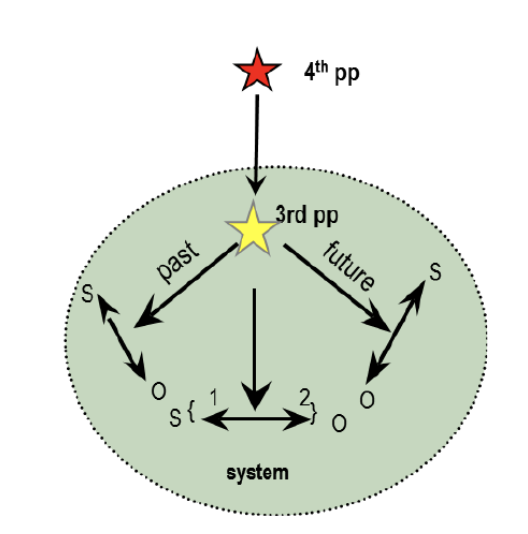The 4th person perspective allows individuals to stand outside the system they grew up in and observe themselves and their cultural surround from a new altitude. From there one gets a better view of the whole valley or plane below. One can look at the familiar (status quo) through a new lens and query many of its tacit assumptions, values, and beliefs.
The 4th person perspective allows individuals to focus on epistemology, that is, to examine how they came to believe what they believe and feel and how one knows and proves things. The transition to the first postconventional stage is a watershed in so far as it is the first time that the vertical move and the questioning of previously unexamined ideas is no longer supported by society and its chief conventional representatives. Postconventional thinking and questioning assumptions may be taught and encouraged in college courses, but then challenged and or dismissed at work and at home.
At this stage of differentiation, individuals realize that all groups and societies see it as their mandate to mold the minds and hearts of their members. What’s novel is that they can now perceive how much their values and worldviews have been influenced by the environments into which they were born, in which they were raised, and in which they currently operate. Who we think we are depends on the historical context, geographic place, economic circumstances, education, the overall structure of the society, and many other factors that are part of shaping us. We have far less control over being “molded” than we previously understood. Socialization, it turns out, is relentless and ongoing from the day we enter the world. It begins with the earliest inculcation of what are considered desirable thoughts, feelings, values, and behavior and what is not. It continues through schooling and is reinforced at every moment via the media, commerce, and, most subtly, by the very nature of one’s native language and communication patterns. While the discursive habit is essential for learning and vertical development, it also poses an invisible danger by its deep and unconscious place in most people’s consciousness.
For many the recognition that one’s own view of life is not the only possible one happens when traveling abroad and encountering other peoples and languages. Nowadays, access via television and internet to different ways of life and other mores can open ordinary people’s eyes to diverse perspectives even in the remotest corners of the world. This is in striking contrast to earlier historical periods when only adventurers dared to hazard abroad and often never came back to tell their stories while most ordinary denizens had no access to knowledge beyond their immediate local communities.
Today’s ubiquity and profusion of information, however, cuts both ways. English as the dominant language of international exchange also acts as powerful indoctrination into Western definitions of what adults should strive for, what personal attributes will favor success in the world, in short what it means to live the good life.39
With the turn away from the achievement-orientation and the external world towards inner experience -- Individualists and Pluralists alike discover how subjective one’s perspective is and how much of what seemed objective is in the eye of the beholder. The move from being unconsciously embedded in a cultural surround to having a perspective on it can be both liberating and confusing. Liberating because now I am even more able to explore and recognize my own unique way of being a human being with new choices and more capacity to understand many fascinating aspects of the world. Confusing because now there are unlimited ways of perceiving the world without any one view better than another. The same object/event can have different meanings for different observers, for the same observer in different contexts or at different times
Stage 4/5 persons become interested in watching themselves trying to make sense of themselves. This constitutes an important change in thought mode. Individualists-Pluralists abandon purely rational analysis in favor of a more holistic, organismic approach in which feelings, body sensations and context are taken into account. The 4th person perspectives allows people to move from merely logical thinking to a more subtle, psycho-logical approach. The need to reason and to explain everything by rational means lessens. Experience itself becomes the new attraction. Thus the process (or journey) of discovery is now as more intriguing than reaching a goal or creating a product.
Individualists and Pluralists tend to distrust conventional wisdom and the hyper-rational tenets of the Conscientious stage. At least initially, they may reject the Achiever mindset wholesale. They may try to distance themselves from all that went before and reject the strive-drive values of the prior stage. This demands that they reevaluate the soundness of the prefixed role identities that society offers and sanctions. One must redefine themselves uniquely and independently of these givens based on their own experience, values, and conclusions.
When one fully realizes that most prior meaning making was socially and culturally conditioned, scientific certainty and the judgmental frame of mind break down. Moreover, Individualists can learn to consciously scrutinize their beliefs in order to test their assumptions or to relish the novel mental freedom such a maneuver opens up. A big discovery for this stage is the relativity of points of view. When people first become aware of this, they may see everything as relative and reject any prior certainties including scientific knowledge as absolute and therefore “false.” It takes experience at this stage to realize that successful living likely requires some of the earlier values. Most individuals need to make a living to survive. Sticking with a job one may not totally like and getting along with others who do not appreciate constant questioning is thus a requirement for most adults no matter how creative and postconventional one may be.
As Stage 4/5 individuals explore their feelings and motivations, they can also begin to become aware of how easily we can fool ourselves. The possibility of defensive self-deception and culturally- biased distortion are now starting to be experienced as ever-present dangers. Given the increasing awareness of one’s own vulnerabilities, persons at the 4th person perspective can exhibit a new, non- hostile type of humor that is directed towards the self. It is based on an the beginning sense of the futility of framing things in terms of right and wrong, provable or disprovable. It also recognizes how easily we can fool ourselves about our motives and intentions.
Cognition: With the 4th person perspective, individuals realize that things are rarely what they seem. Rather than problems to solve, one must figure out what to define as “the” problem (a double loop move). Many things that appear as problems can now be seen as polarities to be managed since most values come in pairs.40 Thus, In the positive, liberated version of this stage, individuals may enjoy paradoxes and contradictions and no longer try to explain them away. “To heck with it! Everything is relative.” Linear, intellectual logic gives way to a more holistic understanding of things. It is not always necessary to prove everything in order to embrace it. There is a perception that sudden insights and breakthroughs are possible. Playful exploration and imagination are set free. Life is fresh and enticing.
Rather than trying isolate aspects of experience into different to categories and analyze them separately as independent variables, Stage 4/5 individuals are looking for connections and subtler clues to what is going on. Useful information can come from many sources that were previously considered outside the realm of scientific inquiry and viewed with skepticism, such as body sensations, intuition, dreams, reflection, and meditation. Therefore, the shift from conventional to postconventional stages also reflects a qualitative shift from a more linear, rational, intellectual to a more organismic and embodied awareness. In addition, this new way of perceiving can foster the realization that the whole (the Gestalt) is more than its separate parts. Therefore attempting to see the whole picture with its parts rather than merely parts and the details becomes an ever more important consideration with further vertical development.
Individualist expression of the 4th person perspective:
Rather than trying to analyze everything, Individualists want to enjoy their own subjective experience. What can be trusted is one’s personal experience, sensations, thoughts and feelings in the here and now. Thus, there is a major shift from the Conscientious person’s preference for “doing” to focusing on “being and feeling.” Instead of marching into the future, Individualists become now-oriented. They begin to notice how feelings are diffused throughout the body. They can come to realize how feelings, thoughts and body sensations affect each other. There is a new sense of body/mind connection and a beginning understanding of the interwoven, systemic nature of experience.
Individualists often replace the focus on causality (past) and goals (future) of the Conscientious person with a fascination with the immediate present. They need to understand and watch how things unfold. Their attention turns from outcomes and deliverables to an interest in the processes, the relationships and the complex, non-linear influences among variables.41 Individualists watch how they themselves and other people change and behave differently in different contexts. They have an existential appreciation for how each moment differs from the next. Therefore the present is newly infused with salience and poignancy. Individualists often express hope and enthusiasm for their lives and their unique experience that others find inspiring. At the same time, they may be so idealistic and enamored with their discoveries, they ignore potential difficulties or downsides. In that case, others may find them too unrealistic, “too intense,” or simply “too much.”
Individualists are often concerned with making a unique and personal contribution to the world independent of any socially approved roles or tasks. But part of the work as a postconventional adult is to discover what that unique purpose may be. They can therefore become enthralled with watching themselves trying to make sense of themselves.
They often withdraw from external affairs and company life, or from ordinary daily routines. Instead, they turn inward in search of their unique gifts or answers to their own burning questions. If they are given room to be themselves and time to experiment freely, they can provide valuable input to the work- place. They find novel ways of looking at problems, or inspire others with their enthusiasm in pursuing their own interests and questions. If working independently, they are likely to fashion schedules and work contexts to optimize their flourishing. Sometimes, they are content to simply live day by day following “their own drummer.” Today’s hippy culture still embodies some of that sense of freedom and self-expression in the company of like-minded others symptomatic of the Individualist mindset.
We have found in our data that Individualists may or may not have a communal bend. Some folks turn towards away from society and focus on their own meaning making. They explore their own minds and hearts and are less preoccupied with issues of equality and making sure that all voices are being heard. While they would not discourage such endeavors for those who are into this, it is not where their own interests and energies reside. Unlike Experts, they do appreciate that others have their own unique ways of doing things and being themselves. They recognize that different people have different needs and preferences. That includes their personal need for now exploring their interiors. They are therefore less apt to judge others. Indeed they may at times appear almost “amoral” in their demand to be who they are and do what they want.
In the extreme, when Individualists overfocus on their inner world and the experience of having multiple – often seemingly incompatible -- selves they may express frustration with development and ever expanding self-knowledge. The more one explores, the more confused one may get. When the overriding feeling becomes “everything is relative,” and “there is nothing to hold on to,” cynicism and nihilism can become a way to defend against the feeling of being adrift on a vast unknown sea unmoored and rudderless.
Identity: While some people at Stage 4/5 relish inconsistencies as proof of the illogical nature of conventional beliefs42, others at this stage may become confused by observing the many contradictions. They often describe themselves as having subpersonalities, many voices, or as an “inner tribe.” These voices cannot be readily synthesized into a coherent self-identity. “Sometimes I act, feel and think one way, other times in another depending on all sorts of conditions: my mood, how well I have slept, what context I was in. There is a struggle within myself, different voices competing for attention. And all seem real and important parts of me. Who am I? What is going on? How can anyone tell with certainty who they really are as they are changing and growing?” Thus, the prevalent anxiety of Stage 4/5 is around integrating different parts of oneself. “I can be both my old rational self, and a new, different kind of person; I am afraid I have multiple personalities. I feel confused, split, ambivalent.”
Instead of the imagined greater integration and harmony, the 4th person perspective and experience may feel like a cacophony rather than a symphony. Depression at this level has several facets: a) The realistic fear of being reabsorbed, that is sucked back into the “rat race” of the Achiever mindset by the demands of society; b) The dread of a routine work life that does rarely allows for individual self-expression and creativity; c) The concern that one will never find a clear self-definition from which to consistently operate and generate a coherent self sense; d) The deep experience of worry and tensions that come from growing beyond the conventional mindset especially when it comes to intimate relationships.
The experience of looking at the world with different eyes than those that used to be one’s closest allies, such as a spouse or a long-term friend, can create great distress for both parties. While the conventional partner is confused about the new way of behaving of the person with the 4th person perspective, those who are postconventional feel misunderstood and un-appreciated for what they now feel they have to offer. The latter also often wish for the significant other to become more like themselves. This, in turn, can make the person “left behind” feel disrespected and misunderstood. In this sense, the move of one partner from conventional to postconventional meaning making poses a particular challenge to couples and long-term relationships. Unlike later stages, early postconventional individuals cannot yet fully appreciate the gifts of the earlier levels. They genuinely feel that if only others -- including their loved ones -- would become more like themselves, then everybody would be happier and the whole world would be better place.
Pluralist expression of 4th person perspective
Pluralists, on the other hand, tend to focus on the multiplicity of voices and contexts. Aware of their own views as interpretations, they do not want to impose these on others. They seek instead to respect and understand all positions. Individual differences are celebrated and paid attention to in a way that
Achievers cannot yet appreciate. The very differences become the center of attention now rather than being bracketed out in order to “manage” the differences in order to reach an agreed upon goal. When a group of mostly Pluralists get together, they often make room for everybody to express their positions and opinions as each person’s view is considered equally genuine and valid from their own point of view as well as a crucial aspect of the overall diversity in the room.
The tendency, to treat every opinion with the same regard can be driven to an extreme. In societies, organizations or teams where everybody’s voice is given equal opportunity for expression, meetings can run on forever and little gets resolved or accomplished. The over-focus on fairness and voice, can lead to “decision paralysis” as no one dares to take a lead role, assert a position, or make an executive decision for fear to be seen as unilateral, uncooperative, or oppressive. Indeed, it is one of the more problematic attributes of many proponents of radical pluralism that they judge all hierarchies as oppressive. They cannot recognize that decision paralysis is its own form of oppression and constraint. On the positive side, especially those individuals who were or felt marginalized in the past may feel acknowledged and heard for the first time.
Above all, an awareness of human diversity and multiple perspectives is the powerful and progressive contribution that this stage has brought to human affairs. Moreover, the egalitarian emphasis of the Pluralist worldview is an important step towards further differentiation and integration. Although it is difficult for Stage 3/4 and Stage 4 people to tolerate committed Pluralists with their egalitarian fervor, Pluralists have prepared the way for an even deeper appreciation and tolerance of difference, one that allows for making qualitative distinctions as well as for cherishing human diversity. This more discerning and flexible view becomes possible at the next, the Strategist stage. To differentiate this capacity from the Pluralist perspective, an individual at the next level can prioritize among voices because they recognize that some views are based on better evidence and take more aspects of a situation into account.
When Loevinger created her original theory in the sixties and seventies, a focus on diversity and equality of perspectives was at the forefront of social thought. People who dedicated themselves to bringing diversity issues into the public discourse were therefore deemed postconventional. In the meantime, diversity and equality concerns are mentioned at all levels of development because they have become anchored in the law. Therefore mere mentioning of diversity and gender equality no longer indicates postconventional development. Especially when Achievers and Experts execute diversity trainings, even with the best of intentions, they may focus so much on the differences to be valued that the bonds of our common humanity can get overlooked in the process.
A special case of pluralism is the academic discipline of deconstructive postmodernism. It beliefs that it is impossible to defend any belief by proclaiming that all views are subjective and therefore legitimate since everything is relative. When relativism is carried to its logical extreme no view or interpretation is better than any other. All are equal. Postmodernists believe that any metanarrative succumbs to the same subjective arbitrariness. They deny the legitimacy of all hierarchies and all hierarchical ordering. When Pluralists adopt this belief, they may be hypersensitive to perceived instances of judgment as “better” or “valuable” in human terms. According to Wilber, radical postmodernism leads to what he calls “Boomeritis (2003).” In the extreme case, postmodernists assert with absolute certainty that there is no position from which to judge anything. They do not yet recognize the inherent self-contradiction in their assertion. It is, of course, a form of judgment and hierarchical ordering of values as those who disagree clearly have a less evolved view from theirs.
Social: The very heightened capacity to contact the self and to introspect leads to a greater capacity to empathize with others and to tolerate different ideas, behaviors and reactions. Stage 4/5 individuals are often admired by others, especially by other postconventional persons, for their unconcerned, energetic self-expression, their spontaneity, and their ability to live a life according to their own unique style free from restrictive conventions. At the same time, they may be feared as unpredictable or dismissed as dreamers and non-doers, especially in an strive-drive Achiever context. Their relationships with others are intense and mutually rewarding when there is synergy and choice. When they have to manage others as part of a job, they can be autocratic or idiosyncratic to such a degree, that others find them “impossible to nail down”, “aloof and unapproachable ” or simply “wishy- washy.” One never knows where one stands with such a leader.
Internal dimension: Individuals are deeply concerned with their interiors, with feelings and motiva- tions. They show a beginning awareness of inner conflict and ambivalence as natural aspects of reality and of the potential for defensive self-deception and culturally biased distortion.
Cognitive level: Things are not always what they seem. One’s interpretation of the world depends largely on one’s position as an observer. One is always a participant observer. One can never be totally detached or “objective.” The same object has a different meaning for different observers. Individuals abandon purely rational analysis in favor of a more holistic, organismic approach in which multiple perspectives and interpretations as well as the context are taken into account. Mature Individualists- Pluralists can integrate and bridge rational thought with non-linear approaches to getting information.
Prevalent anxiety: “I can be both my old rational self, and a new, different kind of person; I am afraid I can’t figure out who I really am. I feel confused, split, ambivalent.”
Depressive style: Inner conflict and despair about ever finding one’s true self.
Preoccupation: Rather than trying to analyze everything, State 4/5 individuals want to enjoy the subjective experience, their unique way of making sense of things. It is all that can be trusted. They are newly focused with being and feeling rather than with doing and achieving. Instead of marching into the future, individuals become now-oriented as they infuse experience in the present with importance. The past is gone and the future cannot really be known. Meaning making has shifted from an analytical - intellectual to a more organismic, somatic and holistic mode of understanding.
Personality types: Individualists often prefer to live at the fringe of society, to live exactly the way they want to be. Admired by postconventional people for their spontaneity and unique self-expression, conventional persons may distrust them for being non-conformist and impossible to understand and predict. Avowed Pluralists can be powerful advocates for tolerance and equality, but also get hung up in endless discussions and overprivileging diversity to the neglect of our common humanity
Language clues: The Syntax of the 4th person perspective contains many contingencies, non-banal qualifications, and several contrasting ideas. “Even though, despite, nonetheless, ,” signal beginning greater cognitive complexity and replace “but” and “or.” Individuals can now entertain contradicting ideas and join them by “both/and” and “while.” The writings contain vivid personal information (often punctuated with exclamation marks) and more nuanced psychological vocabulary and comments on their own responses to the MAP. MAP protocols show a distinct emphasis and “need” for unique self- expression, a vivid sense of released energy and individuality. The verbal rejection of gender items and other prompts in sentence completions such as ,“How can I generalize?” or “it all depends” indicate beginning awareness of relativity of point of view and the nature of generalization.
The Autonomous Stage 5: (Strategist)
The Autonomous stage represents an enlarged fourth person perspective which places the individual’s experience into the context of multiple worldviews and within people’s whole lifetime. Cognitively Autonomous persons have a general systems view of reality, that is, they can comprehend multiple interconnected systems of relationships and processes both internally and externally as these are experienced as connected.
Expanded 4th person perspective:
The self as in embedded in history and multiple cultural contexts
Embrace: like-principled others and a broad range of human beings and their many ways.
Time frame: “historical perspective, lifetime view”
Cognition: general systems view internalized, metasystematic = able to compare and coordinate multiple systems
Chief concern: development of self and others, self- actualization, integration, beginning to own shadow
Positive expression: Well balanced, tolerant, insightful, growth-oriented; committed to improving the lot of all stakeholders
Truth: can be approximated; higher is better since not all arguments and positions are of equal quality. Higher is more flexible and thus more adequate to deal with complexities of all kinds.
The expanded 4th person perspective is now truly world-centric. While earlier stages may express world-centric values and goals, Strategists embrace the tenets of a global worldview and can embody them. They have internalized systems thinking. They not only see the interconnected aspects of the external world, but also that of their own meaning making. With the expanded time frame and wider social networks, Autonomous persons can perceive systemic patterns or long-term trends and are often valued for that “strategic” capacity and vision.
Because of its global understanding and the long-term sense of oneself as part of ongoing history, this stage parallels the “integral” or yellow stage in Wilber’s AQAL theory. As mentioned earlier, the LMF emphasizes the cognitive move from linear to systems thinking as a watershed in meaning making while Integral theory focuses on the qualitatively new capacity to see the world and oneself through an evolutionary lens. The Autonomous stage is the first level that fully recognizes the need and value for the existence of all stages both in terms of diversity in society as well as in terms of one’s own development. At least, in the ideal. The human tendency to want to be among similar people and to affirm one’s own worldview can easily lead to new forms of feeling superior and pride as a member of a chosen or special “tribe.
Autonomous persons realize that they may notice different conflicting aspects in themselves at different times and in different contexts. However, -- unlike Individualists, who may despair about ever knowing who they really are -- they are capable of “owning” and integrating many disparate parts of themselves. This includes integrating previously compartmentalized sub-identities, and rejected or marginalized parts of themselves. The experience of being part of interlocking systems rather than a bunch of separate agents changes one’s sense of responsibility in conflict situations. One sees how one inevitably is part of and contributes consciously or unconsciously to them. The self and the other can be seen as both perpetrator and victim, giver and taker, product and process as actions, thoughts and feelings can no longer be isolated as was the preferred way of dealing with difficulties at the Achiever level. Instead they form a dynamic interplay.
Loevinger called this stage “autonomous” because individuals can now make meaning autonomously, independent of conventional ideas. While one cannot change reality, one has the freedom to interpret it to serve one’s own preferences and to make choices about life and who one wants to be. This is possible now precisely because one fully understands that interpreting and evaluating is what human beings do to make sense of experience. We all tell stories about what is happening, who does what to whom, how we see life overall, and why we believe that we matter. Autonomous persons consciously commit to create a meaningful life for themselves and for others in the world through self-determination and self-actualization. They realize that the way they tell their life stories changes with additional experiences and insights.
The crucial new capacity is to realize one’s power to generate meaning and to tell a coherent self- story by creating it. Unlike people at Stage 4/5 who are not able to integrate various parts of themselves, Stage 5 representatives feel empowered to do so. Thus, Strategist possess a relatively strong, autonomous self sense that is both differentiated and well integrated. It is different from the Achiever sense of authorship because it is much more aware of the limits of one’s control. At the same time, Strategists embrace the options for self-realization they have and see the limits to their power as part of what it means to be alive. With their sense of transformational mission comes set of broader, human principles one must uphold such as the right of all human beings to be treated with justice and mercy.
Autonomous persons worry most about having failed to observe those universal principles they value deeply such as the right of all people to self-determination and for being treated with dignity and respect.
With their expanded awareness, Strategist use even more channels of information to make their moves. They are often conscious of energy dynamics (physical and otherwise), and notice underlying patterns that only emerge over longer period of time. They also have a deeper appreciation than any prior stage of how challenging it is to be a mature, responsible adult and how rare their own capacities are compared with most other people they are in contact with. Thus, they may pride themselves of being in the know about themselves and about the larger issues facing the world. Whatever their personal expertise, it is likely enhanced by interpersonal skills and worldly savvy based on having learned from experience.
Strategist are often motivated and infused with a grand purpose and a vision of what could be. Unlike Pluralists and Individualists, however, their enthusiasm is based on high ideals as well as on a more realistic view of what it takes to change old patterns in self, in organizations, and in society.
Strategists want to hone themselves therefore as instruments of change. They realize that they need to be the most they can in order to be of most service to others. Both servant and steward leadership are part of one’s care for the larger system and future generations.
Wanting to help others evolve is one of the strongest motivators for Autonomous persons. Humanists, developmental psychologists, coaches and consultants often inhabit this stage. So do Strategist executives and leaders who see human beings as precious capital and who take multiple bottom lines into account in measuring their organizations’ success. In the best work place scenario, tangible as well as intangible outcomes are taking into consideration by paying attention to the physical and mental health of the staff, to an aesthetic work environment, to a good work-life balance, as well as to serving the wider community.
Strategists conceive of developing people as a valuable contribution to the individuals themselves as well as to society. When this need to have others “become the most they can be” encounters resistance, Autonomous persons may feel impatient with others’ pace of development and frustrated with their “unwillingness” to grow despite their efforts and support. This need to have others transform is one of the central flaws of this stage along with an attachment to knowing and being coherent.
They also tend to be among those who are most convinced that higher development is “always” better and should be fostered at all cost. Higher is believed to be better because the more autonomous and insightful about their inner dynamics individuals become, the more they can claim that they have an objective (non-distorted) and realistic self-identity (Kegan, 1982). This is the case even though this is also the first stage that can see how all people have had to move along the developmental trajectory through the various stages to be where they are now. Autonomous individuals also understand, at least theoretically, that this happens at a different pace and to a different degree for different people depending on life circumstances and appropriate challenge and support. Developmental thinking is now an aspect of cognition, of being able to look back and see how one evolved from a totally ego-centric and self-protective, to an ethnocentric, to a global or world-centric perspective.
Many Autonomous persons see life as an open-ended journey. They believe that there is no predetermined way to follow for all human beings. Each individual has to find and create his/her own life style and is responsible for his or her own self-fulfillment. Autonomous individuals are interested in psychological questions and how to come to terms with inner conflict. Unlike individuals at the conventional stages, seeking therapy, advice, or consulting from others, is not seen as a weakness, but as a necessity and an actual strength. Autonomous persons have faith in their own and other people’s capacity to make meaning out of challenges and difficulties. They can construe their own personal sense without having to impose it on all others. They may also invite others’ solutions to conflict and respect their needs for autonomy.
Sometimes Autonomous persons find ordinary constraints of life stultifying such as making a living and working an eight-hour day. They see themselves as being destined for bigger tasks with a far- reaching impact different from ordinary folks. They would prefer to enjoy their passions for influence and power on their own terms with maximal freedom or a mandate to do so for the benefit of all. If leading an organization to greatness is one of those passions, it may be a fortuitous match.
Cognitive: With the expansion of the 4th person perspective in time (historical) and space (global) Strategists are able to operate from multiple levels and perspectives. They have fully shifted to a systems awareness while appreciating the benefits of a traditional scientific linear view of reality. They can value and apply both conventional and postconventional practices without having to reject the former in order to feel like themselves. They also recognize natural hierarchies in life. They are no longer afraid of acknowledging that some members of society are better equipped for certain tasks, or more cognitively differentiated than others. The Strategist embraces the notion that all human beings deserve respect, but also knows that not all opinions and all perspectives deserve the same attention.
Unlike Pluralists, Strategists can now prioritize among multitude of voices because they recognize that some views are based on better evidence as well as being more comprehensive and fruitful than others.
Making informed strategic decisions is part of the Strategist leader’s power. She chooses who of the pivotal stake holders to involve when decisions have to be made on an issue that requires others’ input. Society sometimes recognizes as valuable the capacity of the Strategist to make difficult decisions and to compare and integrate multiple perspectives. Furthermore, Autonomous persons have become aware of the performative contradiction of the postmodernist’s position and assertion that there is no position from which to judge anything. They realize that assessing, evaluating and choosing are vital aspects of functioning and making sense of life. They distinguish between biased judging and wise discernment. Whereas one has to be on the alert to avoid bias and notice one’s evaluative preferences, judging itself is crucial in human affairs.
It is at the Strategist stage, that individuals begin to see paradox and ambiguity as an inevitable dimension of living and to increasingly tolerate these. Autonomous persons become aware and fluent in using polarity thinking in order to examine issues and tensions. Complex and sustainable solutions often require that one pays attention to opposing but interdependent values. The most effective and healthy designs foster the wisdom aspects of both poles and the minimize their downsides.
However, the belief that one can at least approximate an accurate picture of the territory with diligence and through dialogue and collaboration is still prevalent. Autonomous individuals are aware of multiple interrelated systems and how influences are circular, cyclical and often tapestry -like. They have beginning access to an understanding of life that can integrate psycho-logically paradoxical elements. Therefore, less energy needs to be spent on “defending.” This then allows Strategists to be more accepting and spontaneous than adults at earlier stages.
Emotional: For the Autonomous person inner processes are fascinating, complex and demanding to explore. As much as they need others, they also need privacy and time for self-reflection. The self is experienced as in transformation and constantly reappraised. Watching this “unfolding” of things is one of the main satisfactions at this stage. One’s precious life work consists in trying “to become the most one can become” in contrast to the goal of Achievers hoping to be the best one can be. In the Strategist’s eyes, good company, good questions, intimate relationships, and a meaningful occupation as well as chances for self-actualization and self-fulfillment are essential for a meaningful existence. Others are valued as ongoing, vital co-actors in one’s own fascinating life drama.
Autonomous persons become fine-tuned to their own psychological well-being and inner workings. They take responsibility for regulating their thoughts, feelings and behavior. They are responsive and adjust when required as part of different life contexts and career phases. Deeper life purpose and legacy issues become an important topics of concern. How does my life and my contribution matter beyond my life time and my immediate realm of influence?
Relativism changes into personal commitment and responsibility for creating one’s own personal meaning. Individuals are now capable of rediscovering and owning parts of the self which have previously been disowned for being too confusing or too threatening. The shadow side of the self can be acknowledged to a greater degree and therefore a new integration and wholeness is possible. Although Autonomous folks experience role conflicts and dilemmas strongly, they recognize that these are inescapable and that ambivalent feelings are natural. Based on this capacity to integrate and take a metasystematic view of different parts of experience, they tend to be quite certain of themselves and their cognitive and emotional capacity for synthesis and integration.
Unlike individuals at the later, the postautonomous stages of meaning making, Autonomous persons try very hard to keep their act together and to come across as reasonable, mature, and knowing themselves well. They feel responsible for being able to orchestrate conflicting needs and different subidentities and generally appear more balanced than earlier stages.
Strategists sometimes present themselves as exemplars of humanity giving off a whiff of superiority. Now even failures and missteps are presented as positive aspects of learning. While reframing and retelling one’s story in a more positive, self-sustaining light is a great strength of this stage, the capacity of owning some of one’s failures and foibles, can be used by the ego to bolster its sense of achievement and importance. We call this the whitewashing tendency of the Strategist. “Look how well I know myself. I am not afraid to share even my less than stellar sides so you can learn Although not inevitable, feeling powerful and insightful because one understands so much about human nature and the world can lead to self-inflation. The focus on “humility” that several leadership studies mention as an important aspect of good stewardship is likely a response to this observation. On the other hand, it is a great triumph over earlier stages, that at this level one can recognize that flaws are part of being human. Getting a perspective on them is a life-long invitation to deepening one’s self- awareness and connection to others.
Interpersonal: Even more than at the Individualist stage, experiences of all kinds can be welcomed and accepted for their immediate qualities. Distressing emotions become more tolerable and offer insights that can be heeded. Strong positive and negative feelings can be acknowledged within oneself and shared with others.
Self and others are accepted as complex human beings with both positive and problematic traits and dispositions. There is an infinite variety of unique expressions of being a self. Only the dynamic and intimate exchange with others makes it possible to get in touch with aspects of one’s behavior one would otherwise tend to overlook. Good feedback makes one aware of what one is defending or blind to. Feedback is vital for continuing development and for gaining ever deeper self-knowledge and wisdom. One needs both the caring and the critical presence of others to optimize oneself as an instrument of change. The deep sense of interdependence creates a need to be mutually supportive and challenging. Strategists may feel responsible to help others transform in order to fulfill what they intuit as other’s potential.
The “transformational” or “evolutionary” fervor of this level is occasionally blind to the transformer’s own identification with and self-importance in being a “transformer.” Many well-meaning change agents are not aware of the potential disregard for the needs and capacity of the recipients in their efforts to help others grow. Strategists can sometimes show impatience with others’ slow development, and frustration with their perceived resistance to grow.
Notwithstanding, many seasoned Autonomous persons are ever more capable of expressing tolerance and non-possessive love (or being love) because of their profound appreciation of other people in their own right as unique individuals and as adults with a growing consciousness as well as fellow human beings with whom one shares the human plight. Others are seen as actors in their own life dramas, which are deeply moving and fascinating to participate in. Beginning with this stage, benevolence towards others and increasing compassion for oneself can become an abiding attitude.
Emotional: Autonomous persons have now access to a wide range of different emotions and different states of awareness. Their emotional tone is different from that of Individualists. It is often less cynical and distrusting, more upbeat and also again more certain about oneself and knowing. Feeling into various sensations and emotions is one of the ways one approaches any experience. Rational deliberation and objective analysis are fully integrated into a comprehensive approach to problem definition and solving. Strategists can also recognize subtle distinctions among similar feelings. Thus,t hey would likely distinguish between various kinds of sorrow, grief, regret, disappointment etc. Overall, they seek to claim an authentic, truthful and adaptive self. Authenticity, is therefore an important value in the Strategist’s value repertoire.46
The greater awareness of their inner depth also allows Autonomous persons to use dreams, fantasy, and imagination much more freely than earlier stages. Their thoughts are allowed to take off. Strategist seek creative, integrated solutions to large-scale and long-term problems. More even than Individualists, they can think outside the box. Their imagination is no longer constrained by conventional approaches while these are taken into account and not ignored or resisted as at the previous stage.
Strong feelings are becoming of interest as indicators of something important to observe in oneself and others. Autonomous persons can see difficulties as a natural part of the human condition -- inherent in the dynamic interplay of multiple systems and of complex human interactions. Thus they are often more skilled at negotiating impasses and conflicts because they are not as likely as all earlier stages to use blaming as a defense. They can identify with others and appreciate their vulnerabilities as well as their unique strengths. Because they are aware of their own many shortcomings, hang-ups, preferences and less than ideal habits, they can express light-hearted humor directed at our general folly as human beings.
Moral: Strategists genuinely feel principled anger and righteous indignation towards the injustices of the world. They will stand up against society to express their personal convictions or to uphold their higher, overarching principles regarding human rights and well- being. They are willing to go on the barricades and risk their lives and reputations in order to fulfill the aims of their convictions. Their anger does not usually seek a victim but is geared towards rectifying perceived ills. Because of their capacity for the long-term view and they often express a deep concern for the well-fare of future generations. They feel a challenge and the obligation to make wise decisions that will serve beyond their own time and region. Self-less sacrifice for the greater good can thus be part of an Autonomous person’s positive self-identification.
A Strategist’s standards for living a meaningful life are elf-evaluated and internalize. “To walk the talk” becomes an expression of one’s moral character and authenticity. One’s behavior becomes an expression of one’s moral principles and convictions. When irreconcilable role conflicts are discovered, there may be a deep unease and yet also a greater tolerance for feeling dissatisfied, ambivalent or confused than at earlier levels.
One must qualify this statement because total acceptance of what is, is not yet part of the Strategist mindset. A serious effort towards even greater self-knowledge and self-management skills remains a facet of an Autonomous person’s ideal self-image and drive towards human perfection. When they seek to become enlightened, they may make an enduring effort to “achieve” that goal with great seriousness and diligence. They may spend years in regular meditation practice, attending retreats, and following a particular spiritual leader or contemplative school. They may not fully realize that their very efforting is in contradiction with accepting what is. The tension between effort towards achieving a goal, even a spiritual one, and acceptance of what is may intensify at the next level of development.
Some Autonomous persons become charismatic moral leaders who inspire others to follow their great vision of an ideal world order and a world fit for generations to come. When they defend what they believe to be a worthy cause, they can be courageous and disregard negative consequences for themselves. But they may also be overly forceful with their convictions especially when they are fueled by principled anger. The combination of charisma, moral conviction and interpersonal skills can be a dangerous combination if not kept in check. Followers often do not have the wherewithal to see the limitations and possible self-serving aspects of such a leader and his or her inspiring ideas.47
Depression: Autonomous individuals become dissatisfied with their lives when they feel they have not fulfilled their unique human promise or when they have not lived up to the greatness they expect of themselves. Loss of courage as well as loss of a sense of self-agency and power can become great stressors. When using defenses, healthy Autonomous persons use mostly mature ones such as suppression, altruism, humor, and reframing. When they use less mature defenses, they may realize it as momentary fallback. They may therefore be able to see this behavior as context-dependent and are able to forgive themselves and move on. However, when they think they have failed in their precious life work and mission, they can despair and feel a deep sense loss of self.
This shift from feeling in one’s full power to feeling no longer needed is especially common when Strategists approach retirement. There has been much ongoing gratification in being successful in their métier, in having raised a family (whether as a personal one, as a thought leader, or as a leader of an enterprise), and in feeling one has made a difference in the world. The question of one’s worth in one’s older, less engaged years looms large. Did one get the rewards and appreciation one was hoping for and if so, will it remain? How does one relax and trust that the next generation will reign as well and as consciously and learn from their mistakes along the way? One way of dealing with these questions is to take on the role of mentor or steward of younger leaders or an organization. When less well navigated, the perceived lack of engagement with others and/or the lack of a sense of being as loved and admired as one expected, can lead to sadness or even bitterness. Ideally, the sense of disappointment can be mitigated with self-compassion and an understanding of life’s whole trajectory – with its inevitable ups and downs, triumphs and losses, and with its beginning, middle and end.
Interpersonal style: One takes responsibility for relationships while also requiring autonomy and personal space. Relationships are seen in terms of inevitable mutual interdependence. One can tolerate and appreciate others’ autonomy and their different solutions to conflict. Non-hostile, existential humor is beginning to be available in tense situations.
Cognitive level: The time frame and social context are expanded to include multiple systems and complex relationships among self, others, systems and global contingencies. These often contradict each other. As a result, Strategists develop a new capacity and strength to see and embrace paradox and insolvable issues as part of a realistic appraisal of situations.
Internal dimension: One can now make sense of oneself in terms of inner conflict and “polarities”. Strategists try to integrate into a coherent whole what they see as their different selves at different times in different circumstances. Self-identity is a creative act of integration based on a new sense of being embedded in a global context and a life-time sense of unfolding.
Conscious preoccupation: Strategists are concerned with self-actualization, self-fulfillment, and legacy issues. They are interested in the psychology of self and coming to terms with their preferences and conflicting needs .
Chief anxiety: a) not to fulfill one’s personal potential, b) not to self-actualize, c) not to live up to or neglect those global principles of justice, tolerance etc. one holds dear above any others, and d) loss of courage.
Defenses: Mostly mature ones: suppression, positive reframing, altruism, and non hostile humor When using less mature defenses, one can be forgiving and understanding towards the ego
Representatives: Charismatic individuals who are ready for personal sacrifice in order to defend through personal example the moral principles they believe in. Visionary leaders with the capacity to see how systems interrelate and are aware of the long-term implications of their choices.
Language clues: Autonomous persons use a complex, flexible syntax; with a wide array of topics and concerns. They try to do justice to the complexity of life in their verbal expressions. They try to present a coherent exposition of their thinking and themselves. They use differentiated psychological vocabulary and understand circular causality in human relations. “Authenticity, evolution, transformation, higher principles, life purpose, authenticity and self-fulfillment” are among favored concepts. “Both/and” as well as “either/or” thinking is used in combination or alone depending on the context.
B) The Postautonomous Stages
The next two stages in the sequence represent the final steps in the ongoing movement of differentiation and integration from stage to stage that I observed in my studies of the evolution of the self through sentence completions. These last two stages are based on the sparse but telling evidence from these as well as on personal encounters with individuals at these levels. Few people develop a fifth person perspective and even fewer gain an ego transcendent or a Unitive view as a permanent place from which to metabolize experience and witness the process of meaning making itself.
These two advanced stages represent qualitatively new ways of seeing reality and experiencing life and the self. They replace Loevinger’s vague Integrated stage (I-6, E9). Her theory of identity formation describes an ever more clearly defined and delineated self-identity. She held a view of ego integration that could not conceive of the possibility of the transcendence of both self-boundaries and the need for a permanent self-identity. Cognitively, the last differentiation represents cross-paradigmatic capacity operations. Any further differentiation within the same paradigm of increasing hierarchical complexity is reaching is manifest limits. Only the creation of a new way of knowing can hierarchically supersede and integrate all previous knowledge and ways of knowing in the symbol-mediated, personal world of meaning making.
The two postautonomous stages are called Construct-aware or Ego-aware, and Unitive respectively. 48 Now people come to realize that all objects are human-made constructs, including for instance such abstract constructs as purpose, linear time and the ego. All are based on layers upon layers of symbolic abstraction. Even such an everyday concept as a “bed” is an enormous simplification. No two people’s mental picture of a bed is alike and no two beds in the world are identical. And yet we all use the term “bed” and it works well for most purposes of communication. To become cognizant of the pitfalls of the language habit as well as its tremendous gift to humanity, is a unique feature of the the most advanced ego stages.
At the first postautonomous stage, the conventional belief into a permanent object world and the idea of a clearly delineated and achievable self-identification begins to be questioned and investigated. The arbitrariness of labeling reality is recognized as crucial to any knowledge endeavor including the seeking of self-knowledge. At the next level of integration, the Unitive perspective, reality is understood as the undifferentiated phenomenological continuum or chaos, the creative ground, “das All,” or whatever other terms human beings have created to express this awareness of an underlying unity.
In summary, one of the main existential concerns of men and women at these two most mature stages of ego development is to deal with the fundamental assumptions about human nature and one’s need to make order out of the chaos as well as the need of the ego to create a story about what it means to be alive and why one’s existence matters.
Four reminders of how Ego Development Theory frames reality in its own Western- flavored way.
First, because of the statistical rarity of these two stages and the method of creating ED theory based on the evidence from sentence completions, their formulation and descriptions are more tentative than those up to the Strategist stage. On the other hand, their likelihood has been confirmed in several dissertation studies.
Second, in observing and dialoguing with individuals who tested at these rarer, most developed ego stages, we found that there are many more ways to embody them than earlier worldviews. This makes culling the essential features of these stages much more challenging. It is also harder to identify who should be considered fully functioning from these later perspectives and who shows occasional signs of them but has not yet made them their meaning making home base.
Third, the whole theory was developed based on a Western cultural premise. It was verbally tested with individuals for whom English is either a first or a very fluent second language. Where feasible, translators who were highly sensitive to nuances in both the first and the second language were employed. Nonetheless, there are forms of meaning making especially in remote areas of the world and in languages that are less linear than English that fall outside this framework and cannot be readily examined by duplicating the sentence completion method.
Finally, I like to restate the conclusion of my dissertation (1999) that the Unitive stage is a catch-all stage for the ego transcendent realm of human development. Further study and using different methods of exploration will likely lead to further differentiations and insights into the nature of unitive understanding. Clearly such subtle distinctions already exist both in Ancient Eastern texts as well as in the eyes of Western observers (Brown and Engler, 1978). It is regrettable that the inherent limitations of the radical empirical method I adopted from Loevinger does not render such information. Terri O’Fallon (2010) has recently attempted to refine and extend the conception of the postautonomous stages by Wilber’s AQAL model as a scaffold and reinterpreting the distinction between stages and states of consciousness based on her research and experience.
Few earlier explorers of meaning making have tried to conceptualize the frame of mind of individuals who go beyond a systems view, most notably H. Koplowitz (1984).
Koplowitz defined reality as an undivided unity, or undifferentiated phenomenological continuum, without boundaries and time-space distinctions. It is this same cohesive reality that A. Korzybski (1948) referred to as the overall “territory” existing prior to human mapping. He warned generations of scholars not to confuse the territory with the maps we are making of it. To be able to think about reality as an undifferentiated whole – even if only as a thought experiment – is important for understanding the phenomenon of late stage development.
Genesis in the Old Testament provides a telling example of the general mechanism of the progres- sive segmentation and differentiation of the undivided whole. The creation myth identifies some basic categories of human experience in order of their appearance: From heaven and earth (above and below), to day and night (light and dark) to animate and inanimate (alive and not-alive; moving and stationary) etc., to the final arrival of humans and with them more abstract, non sensory-based concepts, such as the “naming” of the animals, and the prohibition to eat from the tree of “knowledge of good and evil.”
Overall language can be conjectured to have evolved via progressive elaboration throughout history and repeatedly in different cultures. The creation story is but one example of how new segmentations and differentiations are made as the need arises. It is by naming the distinctions we make, that we eventually create the complex world of our lives full of things, events and ideas.
Understanding this process, allows people to see through their tendency to reify reality and the self and to feel most alive and genuine in an indeterminate process of witnessing, and ultimately of being without the need to defend any particular kind of experience. Certainty and uncertainty merge as one feels at home in not knowing and yet open to fully experiencing whatever enters consciousness.
The Construct-aware and Ego-aware Stage 5/6 (Magician, Alchemist)
Time frame + Embrace: Beyond own lifetime; global- historical perspective; multicultural awareness and appreciation of completely different ways of living and making sense of life.
Cognition: Complex interaction of nested systems; cross-paradigmatic; understanding of evolutionary movement, unitary concepts are perceived but not yet fully embodied.
Preoccupation: Inner conflict around existential paradoxes, the habits of the mind and heart & intrinsic problems with language and meaning making in the discursive mode.
Positive expression: Accepting paradox and ambiguity, committed to serving self and others with humility in the face of our existential predicament as mortals needing maps and yearning to matter and make a difference.
Truth: In the personal, rational, symbol-mediated realm of meaning making one is always separated from non-duality, no matter what level of abstraction and of insight one gains. Truth via representational understanding is always partial, perspectival, geo- and anthropocentric.
The Construct-aware and the Ego-aware Stage 5/6 is the final observed differentiation in the sequence of overall differentiation or separation from a previous worldview on the path to an ever greater integration or union. Unfortunately, the “professional” labels that have been used or suggested for this stage -- Magician, Alchemist, Crone, Jester etc. -- are all inadequate to express the varieties and depth of understanding, this level is able to gain. The professional labels tend to reflect behavioral aspects of this stage that are not shared by all of its representatives
As a stage of differentiation, the 5th person perspective again questions everything that seemed to hold true and be certain up to this point. Indeed, an all- pervasive uncertainty is one of the characteristics of this stage. The suffering that can accompany this feeling of groundlessness is sometimes described as the dark night of the soul or in the existentialist French literature as “no way out.” This level, like others, becomes the home base for some individuals and its very fluidity and uncertainty can become a source of élan vital and relish. It is precisely in the tension between polar opposites that the most active engagement with life is experienced. Overall the first postautonomous stage reflects taking a further perspective on what went on before. Magicians are stepping back and observing meaning making from an even higher altitude and from a broader purview of what it is to be a human being than prior levels. This includes comparing and integrating multiple systems and paradigms. It also includes realizing our human need for map making and trying to organize experience and knowledge into ever more complex matrices and metatheories.
Evidence from the SCT indicates that for some adults the search for an integrated, enduring self- identity is superseded by a more immediate, fluid and process-oriented self-view. It seems that the systems view of reality can give way to a more flexible, continuously deconstructing, non-reified notion of self in a rare transformation beyond it. In his current interpretation of the fifth order of consciousness, Kegan (1994), for instance, describes adults at his interindividual or self-transforming order of consciousness as having such a process-oriented experience of the self. As soon as one becomes aware of one’s need to reify experience and tell a good self-story with a permanent self as its main actor, one deconstructs any such identification.
We have found it useful to distinguish between two forms of embodying this stage: a) The Construct-aware and b) the Ego-aware. Both are expressions of meaning making in the personal, rational and symbolically mediated realm of awareness. I originally named the 5th person perspective as the Construct-aware stage because becoming aware of the constructed nature of reality it is one of the most salient characteristics of this stage distinguishing it from prior stages. However, given new data and my observations of people over 30 years, I find that overall more people fit into the Ego-aware perspective than into the Construct-aware one. I thus now prefer to call the stage itself Ego-aware, and to distinguish more clearly between the two expressions. Some individuals seem to be more alert to the experience of living life in a fundamental quandary of questioning their own questioning and seeking while others focus more on the construction of meaning and the language conundrum.
My theoretical hunch is that construct-awareness comes somewhat earlier on board in meaning making than ego awareness. A tenet of constructive developmental theory itself, namely that a certain level of cognition is necessary but not sufficient for stage development, seems to confirm this sequencing. In addition, if the hypothesis is valid that the ego is valiantly trying to create a coherent narrative about our existence and about the world, a last ditch attempt to create the most comprehensive maps possible would be one expression of this need at the Construct-aware level. On the one hand, it looks like becoming aware of the construction of meaning comes earlier than being aware of the ego’s fundamental needs and efforts at meaning creation. Personality differences as well as prior training may play a role in this distinction. Thus I have even wondered whether construct-awareness as a rational approach to meaning making can be skipped in favor of going straight for ego- awareness and towards ego-transcendence. Based on this more recent hypothesis, I first describe the Construct-aware form of this level. Additional studies may help to confirm or disconfirm the sequence.
a) the Construct-aware expression of this stage:
The Construct-aware stage represents folks who are aware that meaning is constructed, invented, generated rather than inherent in things, events and concepts. At the same time, Construct–aware people try with great ingenuity and dedication to create super theories or multidimensional maps or tapestries of reality. They attempt to integrate whatever other theories they are aware of into an ever more complex and comprehensive theory of everything.50 Thus some Construct-aware individuals spend a lifetime creating such theories in order to provide the meta-perspectives or supermaps they feel are going to help themselves and others to better understand the complexity of human affairs. A chief indicator that we deal with such an endeavour is the extreme complexity of such theories.
Still others with the 5th person perspective begin to fathom the cognitive dimension of meaning making itself. They start to wonder about the meaningfulness of more and more complex thought structures and integrations such as can be imagined with a fifth or nth person perspective. Playing the complex numeric abstractions and formulas game is one way the ego can increase its sense of control and meaning. It also seems to please some individuals to demonstrate their capacity for mental gymnastics. Making the most of this talent and sharing it is a perfectly valuable contribution to the knowledge quest. But for those more interested in the quest for meaning, the simple question arises in the face of hypermentalism “so what?” How does ever more cognitive complexity serve our daily living and our understanding of the human condition? Some Construct-aware individuals therefore may also begin to realize the absurdity or automatic limits of human map making in the discursive, represen- tational domain.
Becoming conscious of the futility of describing reality by ever more complex maps and approximations can lead individuals to suffer greatly as they experience the limits, but have no way to transcend them with the same rational means that have brought them to grasping this state of affairs. An altogether different relationship to knowing is necessary, one people often glimpse during meditation or other altered state experiences.
b) The Ego-aware expression of the 5th person perspective
In contrast to the Construct-aware insights, Ego-aware individuals tend to be people who have become aware of the pattern of development that encompasses an ever broader realm of experience, action, feelings and thought. Above all they may viscerally get the absurdity of trying to understand reality with the mind and via representational means alone. The 5th person perspective enables them to analyze both their own becoming and the evolving theories about their own becoming as well as to begin to notice the fundamental need for orienting frameworks or stories that are at the heart of all human meaning making across the globe regardless of culture.
They realize that the “ego” has functioned both as a central processing unit for all incoming stimuli (ego as process) and as a central point of reference for self-identity formation (ego as representation) a distinction first introduced by Funk (1994). In light of the importance of this distinction, let me recapitulate the two distinct uses of the term “ego” in ego development. While the process of differentiation and integration is likely to continue all the way to a non-dual identity with the “ground of being,” ED Theory chronicles the nine transformations in self-identity that were deduced from analyzing sentence completions. In general, the self-identifications described by ego stages follow a pattern of increasing flexibility, choice and non-defensiveness as individuals mature.
Once human beings realize the fundamental function of the ego to create a sense of permanence and saliency, they may experience their full and inevitable ego-centricity. As long as one operates in the rational, language mediated realm, there is no escape from this insight. Having an ego which craves clear boundaries and significance and unceasingly tries to create them is now often felt as a constraint to further growth and understanding. When the ego becomes transparent to itself, it may well desire ego transcendence, but the very attachment to detachment creates the paradoxical situation of exacerbating the attachment. The more one tries to move beyond with greater effort, the more one gets stuck. Noticing and experiencing such existential dilemmas is common at this stage.
Unlike the more cognitively-oriented people with the 5th person perspective, Ego-aware individuals focus more on the ego’s clever and vigilant machinations at self-preservation by creating the illusion of a permanent self-identity. Final knowledge about the self or anything else is seen as illusive and unattainable through effort and reason because all conscious thought, all cognition is recognized as constructed and, therefore, split off from the underlying, cohesive, non-dual territory. Even such a concept as “ego” or “feelings” become now questionable. What is the ego other than a term we have created in order to explore and communicate a kind of experience in the West that is shared and utterly human. To what degree is this concept necessary and useful and in which way is it reifying experience to a degree that prevents us from fully being alive and open to experience without linguistic filters?
By turning further inward, Ego-aware persons start to see through their own attempts at meaning making. They become aware of the profound splits and paradoxes inherent in discursive thought. In many ways, they individually rediscover the Korzybski’s notion that “the map is not the territory.” Only this time, this realization is not just an interesting piece of received knowledge, it constitutes a vital and often temporarily painful aspect of consciousness.
Many find it fascinating to explore the linguistic process of naming aspects of reality by splitting experience into polar opposites as vividly portrayed in Genesis. The splitting is accompanied by automatic and socially supported value judgments about what is desirable and what is not.
In the last half century, constructive developmental theory has contributed much to refine this observation. What is considered to be desirable and what is not depends on the cultural context as well as on the level of consciousness. The interconnected nature of concepts only becomes obvious at the postconventional stages and then with increasing sharpness and clarity. Concepts makes sense only in conjunction with their surround and their polar opposite. Good and evil, life and death, beauty and ugliness are now recognized as two sides of the same coin. They mutually necessitate and define each other. While polarities as used in polarity dynamics can be understood as pairs of interdependent values at earlier levels, here, a deeper understanding of the discursive conceptualizations and abstractions is sinking in, namely how these are created in the first place. Moreover, some Ego-aware individuals can become aware how the constant and automatic judging habit of what is good and what is not creates much of the unhappiness and striving for betterment so prevalent in ordinary waking consciousness.
In general, Ego-aware individuals have a dynamic and multi-faceted understanding of human nature and the complexities of human interaction. They want to face their own profound need for theories and explanations. They hope to unearth the limits of the rational mind, and to unlearn their automatic, conditioned responses based on memory, acquired distinctions of what is good and bad through continuous, everyday cultural reinforcement. They are also aware of the habits of the heart, of our seeking for self-understanding and compassion for others.
Ego-aware individuals start to pay attention to their own emotional and rational processing patterns. To watch oneself trying to make sense is intriguing and absorbing and can become all- consuming. Living at the edge of meaning and meaninglessness can be exhilarating at times and frustrating at others. Whether individuals at this level focus more on the liberating aspects of their awareness or more on the disillusionment and sense of loss that come with this mindset probably depends on many factors: among them personality type, the company of understanding others, and general life circumstances. Ego-aware individuals begin to notice how fleeting and recursive thoughts and feelings can be. They may observe how these follow ingrained patterns of repetition that are not amenable to conscious effort at overcoming them. “Here my ego goes again despite knowing better” is the refrain often mentioned in Ego-aware sentence completions.
Needless to say, this new level of insight can be quite disconcerting and confusing. It’s like the bottom of the barrel has fallen out. Now there is truly no place to stand on. One must learn to live in the tension of the paradox that as a human being one must embrace one’s need for meaning while, simultaneously, understanding the futility of such an endeavour.
Ego-aware folks may come to feel that the automatic judgment habit that constitutes much of ordinary functioning as a major barrier to deeper self-acceptance and embrace of others. They observe the habits of mind such as the tendency to endlessly analyze and reflect in order to create ever more accurate theories of life and nature. All of these endeavors can now be understood as partial defenses against knowing the impermanence of the embodied self. Thus, at the Ego-aware stage not just cultural conditioning is seen through, but the predicament of living in language.
When people see through the filter of the symbolic construction and mapping of reality, their disposition towards the language habit can change profoundly. In general, Ego-aware individuals try to remain aware of the pseudo-reality created by words. They realize that the pursuit of objective self- identification and rational, objective explanations of the universe are futile--artifacts of our need to make permanent and substantive that which is in flux, immaterial, and impermanent. To reiterate a crucial point, the language habit works to support the ego’s supremacy whenever we make meaning through representations regardless of the specific tongue, power base, or cultural or personal context. At the same time, Ego-aware adults appreciate the vital function language plays in human affairs and growth.
As the process of self-awareness deepens and reasoning becomes further differentiated for individuals at the 5th person perspective, access to intuition, bodily states, feelings, dreams, archetypal and other transpersonal material increases. More than that, these sources of knowledge can become as important as rational deliberation for making sense of experience and for finding meaning in life. Indeed, the capacity to draw from and appreciate insights from non-rational sources of information increases throughout postconventional development.
Most importantly, the more regular practice of turning inward and observing one’s own mental processes also often leads to the spontaneous experience of a direct mode of being in which knower and known momentarily merge, and the personal self-sense disappears. These states are variously called peak moments, flow states, or bliss experiences. A. Maslow (1971) and M. Czikszentmihalyi (1990) give excellent profiles of the nature and consistently positive qualities of these states. I am not saying here that all contact with the numinous is blissful, only that flow states tend to be so, and thus, beckon the traveler to yearn for more such experiences. The process of dismantling the vestiges of the conditional self can also be harrowing as described in alternative states of consciousness entered through other means such as drugs or devoted meditation practices. Best known text in the West for that elucidates the confrontation with one’s demons is the Tibetan Book of the Dead.52 The conscious experience of non-ordinary states of consciousness in peak experiences -- where one loses track of self and time -- helps to put in perspective the self’s temptation for an exaggerated sense of power and agency and offers an alternative way of experiencing.
Ego-aware individuals report more often than people at earlier stages that they are watching or witnessing the parades of thoughts and feelings come and go without trying to direct them. Thus, they experience moments of freedom from the ego’s constant efforts at control and self-affirmation. Yet, at this stage, such experiences are short-lived. As soon as one evaluates and judges them, the magic is broken.
We are naturally reluctant to relinquish our familiar mode of functioning. We do not want to give up the illusion of our enduring separate identity, which we so laboriously learned to define, cultivate, and rely on for most of our conscious lives. Even if we understand that letting go of our attachment to the known will bring freedom from familiar kinds of suffering, attempts at doing so are ineffective and often lead to intractable paradoxes. The more one becomes attached to the idea of non-attachment, the more firmly one remains fettered. The more one is conscious and proud of one’s psychic powers and ego- transcending quest, the more clearly one’s ego is still enthroned. C. Trungpa (1987) in Cutting Through Spiritual Materialism has perhaps given the most cogent and concise analysis of how the ego can usurp transpersonal episodes for its own self-perpetuation and glorification.
It is a fact of life for persons at the 5th person perspective that there are few other people like them. They may fear that almost nobody understands them in their complexity and can sympathize with their experience. Fearing this, they wonder whether they are culpable of hubris, of feeling “better” than others. They also observe their own self-attachment and their need for a permanent self-identity by means of ever more comprehensive self-theories. On the other hand, they truly appreciate others’ need to make sense of their lives within their own means, values and mindsets. They therefore have a much deeper toleration for others’ solution to life without being blind to the possible shortcomings and limitations of such solutions. Sometimes Ego-aware folks express a sense of envy at the simplicity of earlier periods because their own world is experienced as so complex. However, given their ego maturity, most are capable of arriving at a dynamic and hopeful balance within these fundamental conflicts: They fulfill their perceived or chosen destiny independently and courageously in full realization of their basic despair and aloneness. When they cannot integrate this awareness, their depression is about man’s essential aloneness and inability to create lasting meaning through the rational enterprise.
Ego-aware individuals represent the first stage that looks at all experience fully in terms of ongoing fluctuations. In terms of theory, one builds edifices of knowledge and dismantles them as soon as they are erected. In terms of the heart, one may feel any emotion and then question its very validity and appropriateness as soon as it is felt or expressed. Ego-aware people are therefore even more sensitive than Autonomous persons regarding the well-being of others and capable of understanding them in compassionately in developmental as well as in psycho-dynamic terms.
When people with a postautonomous perspective choose to work in the public, they often rely on their fine-tuned interpersonal skills and insight into others’ complex and dynamic personalities. As leaders, they tend to build their own novel organizations or work alone doing what they perceive to be their best contribution to humanity. Some like to take on the roles of catalysts or transformers in organizations, but readily leave these when they feel their transformational work is done. They feel successful when they have made themselves dispensable, that is, if the organization itself has become transformative and self-organizing. In groups and organizations, they may notice archetypal and group process patterns that elude other observers. They may understand larger group forces and castings of individuals in the human drama, that the lead actors themselves are not aware of. As consultants and mentors, they can optimally adjust their engagement style to their clients’ personality and developmental needs: They can let them find their own way within their own means through empathetic listening, skillfully challenging set ideas, and helping them reframe their experience. They can support people in telling new self-stories, and gain courage to experiment with the boundaries of their current way of meaning making.
As therapists and coaches, they can listen to others’ listening and meaning making and be with them in an deeply empathic manner. They often offer transformational, non-distorted and creative feedback and practices to support their clients. They have access to their own earlier ways of meaning making in a much deeper and more effective way than people at the other postconventional stages. This allows them to freely tailor their interactions to the needs of those they interact with. Thus, Ego-aware individuals may have access to supporting Self-protective persons by dealing with them on their own level, unilaterally asserting their superiority and power.53 Unlike earlier levels, they are less concerned with success and rewards for their efforts. Sowing seeds that may take a long time to germinate if at all, is part of what one does because om can do no other.
As coaches and therapists, they do not presume that they can fully understand the experience of other people in their uniqueness while they feel an affinity with them on a human level. The 5th person frame of mind with its deep questioning of meaning making is open to not-knowing that no previous stage can fathom. It provides a constant level of awe and wonder about being a human being and the mystery of consciousness development. In light of this, a good indicator that someone is able to look at himself and others’ from this altitude is a profound humility about the limits of knowing.
Some Ego-aware individuals may, on the other hand, resent the very self-importance and sense of knowing exhibited by many Strategists with their air of certainty, subtle expression of self-satisfaction, and their burning desire to help others to self-actualize and become more integral and enlightened. They see the temptation to view oneself as the summit of human understanding and/or as a valid measure of what is possible and the desire for others to be different than they are as a basic shadow in change agents at earlier stages. In many ways, Blaire Pascal answered his question of “what is man?” in his essay Pensées (~1661) in a way that described the experience of the ego-aware person cogently. He said, and I paraphrase, “Man is nothing compared to infinity, and an infinity compared to nothingness.” While Strategists hang out on the infinity side of this equation and relish the sense of power and knowledge they have gained, Ego–aware individuals may sit in the tension of the two opposing perspectives, and vacillate between them. Some find most affirmation in knowing that so little of substance is knowable, and relish the mystery of being.
As highly differentiated individuals, some may be over-critical of themselves when they first become aware of their ego-attachment. With practice of experiencing one’s attachment to having an ego with ego needs and letting it go, Ego-aware individuals can become tolerant of themselves in their vacillating complexity. They generally use mature defenses (sublimation, non-hostile humor, bracketing out) as they become aware and insightful about their own foibles and defense styles. No longer do strong emotions need to be recast as positive aspects of the self. They can now be spontaneously expressed in their unmitigated form because the need to defend and look good has lifted. One is much more free to be who one is including revealing one’s emotions, vulnerabilities, and confusions. In the best scenario, this self-revealing openness can model to others that being vulnerable connects one to the very humanity of others. There is no pride in one’s actions, only the compassionate offering of the wounded healer.
To summarize, Postautonomous meaning seekers are capable of perceiving the structure of their own thinking and feeling habits, comparing them to that of others and discovering the fundamental limitations of all rational thought and the limits of language. Usually they come across as very bright, but often impatient with their own cleverness as they see it as just that. They are intrigued by the human need for meaning making and its ubiquitous expression across time and the known world. They understand for the first time the underlying process of how such meaning is constructed through the invention-construction of ever more complex theories. These are based on the segmentation and reification of the underlying flux of phenomena. Thus they are often preoccupied with the limits of discursive meaning making and with learning how to live with the existential paradox of being a mortal yearning for significance and immortality.
Conscious preoccupation: The limits of rational thought and language, and living in the tension of the consciously insolvable problem of existence and non-existence, life and death.
Counseling style: Ability to adjust style to clients: mentoring, letting others find their own way within their own means through empathetic listening, challenging ideas, helping them reframe their experience depending on where they are in their development.
Depression: Despair about man’s essential aloneness and inability to create lasting meaning through the rational enterprise.
Chief anxiety: Fearing that almost nobody understands them in their complexity and sympathizes with their experience, and that by fearing this, they are culpable of hubris. Concomitant with feeling not appreciated or understood can be a deep sense of loneliness.
Language clues: The language of Construct-aware people is often complex, vivid, authentic and playful. It is more direct, sometimes rawer than that of Autonomous persons’ because there is far less need to show one’s best side, to impress as at previous stages. Construct-aware people express a vast matrix of topics, concerns, questions, insights and commentary cleverly united into a complex sentence structure. Responses that have a stream-of-consciousness quality, or thought-in-progress mode belong here as do expressions of one’s attempt to let go of conscious structuring. Vivid expressions about the constructed nature of reality occur at this stage as well as fundamental questions about meaning making as a defense, concern with issues of definition, and epistemology.
### The Unitive stage 6 The cosmic, ego-transcendent or witnessing perspective
In the sequence of ego development and the growth of self-awareness, this is the last step in the sequence of differentiation and integration we were able to discern. From the ancient wisdom literature to recent research in higher stages of consciousness, there is evidence of many more stages beyond the rational, symbolically-mediated personal realm of meaning making. How many such stages exists depends on the literature consulted and the criteria by which stages are defined. The scarcity of data collected with the MAP testing method did not allow me to make any finer distinctions in the ego- transcendent realm. Consequently, my description of the Unitive stage likely confounds several distinct higher levels of consciousness into one catch-all level. Still, the characteristics were carefully taken from actual utterances from individuals who expressed a novel perspective only possible from a paradigm shift from a personal to a trans-personal or immediate witnessing capacity.
It seems that the Unitive stage presents an entirely new way of perceiving human existence and experience of consciousness. The term witnessing (rather than observing) can be used here to describe the capacity of people at this stage to metabolize experience without the conscious, willed focus and preoccupations of other adult stages. The Truth is imminent in the universe and can be apprehended in this ready, open-process stance, but it cannot be grasped by rational means and by making an effort. Unitive individuals therefore seem to transcend narrow ego-boundaries. They have open boundaries and are attuned to rather than preoccupied with whatever enters awareness.
.png)
Individuals at this level are now able to witness the whole song and dance of prior ways of understanding and meaning making with compassion and equanimity. They understand the need of the personal ego to ensure a sense of permanence and substantiality while at the same time recognizing the illusion of this desire for permanence. The previous way of viewing reality solely from the self’s perspective and through the medium of language is transformed. The new paradigm has a universal or cosmic perspective as an organizing principle and as a steady place from which meaning is derived. It is non-centered in the ego although the ego is available as a perspective when useful. Unlike state experiences that gave people glimpses of mystical or unitive experiences, now these are steadily available in the witnessing stance.
Unitive individuals experience themselves and others as part of ongoing humanity, embedded in the creative ground, fulfilling the destiny of evolution. The two sides of the Pascalian paradox are integrated: feelings of belongingness and feelings of one’s separateness and uniqueness are experienced without undue tension. They are simply changing perceptions of the unending possibilities of being. At this level of integration, adults can look at themselves and at other beings in terms of the passing of ages, of near and far in geographical, social, cultural, historical, intellectual and developmental dimensions. They can take multiple points of view and shift focus effortlessly among many states of awareness. They feel embedded in nature - birth, growth and death, joy and pain - are seen as natural occurrences - patterns of change in the flux of time.
Consciousness or rational awareness is no longer perceived as a shackle, but as just another phenomenon that assumes foreground or background status depending on one’s momentary attention. Persons at the Unitive stage can see a world in a grain of sand, that is, they can perceive the concrete, limited, and temporal aspects of an entity simultaneously with its eternal and symbolic meaning. Because of this unitive ability (Maslow, 1971, p. 111) they can cherish the humanness in the seemingly most undifferentiated beings and feel at one with them. They respect the essence in others and therefore do not need them to be different than they are. It is important to realize that from a unitive point of view, later stages are not better than earlier ones because all are necessary parts of interconnected reality and the overall evolutionary process. Unitive thinkers also accept themselves “as is” in a non-controlling way. No matter how great their achievements may be, they are aware that these are only a drop in the pool of ongoing human endeavors. Sensitive others are often struck by the humility and grace that they experience in the presence of Unitive individuals. Being down-to-earth (simplicity on the other side of complexity) can be one of the most salient differences between postconventional ego stages and transpersonal ways of meaning making.
On the other hand, Individuals at this most mature ego stage may be perceived as “aloof,” as not enough engaged in the goals, pursuits, concerns of common humanity especially from the perspective of individuals at the Self-conscious and Conscientious stages 3/4 and 4. Even early postconventional people may be suspicious of this kind of “togetherness or groundedness.” What is not evident to these critics is that Unitive adults often act as catalysts in shaping others’ lives. In being what they are without excuses, they challenge others’ perspectives, and demonstrate a way of being human that is different from the evaluative, conventional ideas about what it means to be an adult. They manifest a deeper security about being than is possible with a rationally generated self-identity. In contrast to all other stages, Unitive individuals seems to have intense, non-demanding relationships with people regardless of their development, age, gender, or any other identifications. Because they see the dignity in all manifestations of life, others feel worthy and whole in their presence.
Unitive persons have a completely internalized transpersonal or interindividual morality. Inner conflicts and conflicting external demands simply are part of being and need not be resolved or denied, only witnessed. They are no longer driven by desires to be one way or another, to achieve one state or another. Instead they can let go of the unattainable and rest in the experience of being. They are concerned with global justice, spontaneity, existence & creativity but create no undue tension around goal achievement. Rather than being passive, the non-attached, impersonal stance allows for greater and more direct and powerful action where action is needed. Non-attachment to outcomes is an essential and liberating aspect of witnessing and acting out of non-defensive, spontaneous insight.
Reality is now regularly experienced as the undifferentiated phenomenological continuum or the creative ground of unified consciousness. Every object, word, thought, feeling and sensation, every theory is understood as a human construct: separating out, creating boundaries where there are none. The quest for meaning and connection is an essential aspect of the human condition. Giving names to experience and making distinctions is necessary for human growth, study, interaction and communication, but at the source there is nothing to distinguish.
Stage 6 individuals feel interconnected with others as all sentient beings struggle to survive and make sense of their existence. Persons at the Unitive stage feel tolerance, compassion and an affiliation with all manifestations of life. The simplest flatworm is in some way as close to the truth as the most sophisticated thinker. Peak experiences no longer have an out-of-this-world quality, they have become a familiar way of being and experiencing. They form the ground and are no longer “peak.”. From moment to moment only the present is real. Radical openness releases individuals to be in tune with goodness, truth and beauty and to relish them wherever they are present which is everywhere. They have visionary experiences, that is, they comprehend things in a holistic, analog way in addition to apprehending them through the filter of the personal ego.
Unitive perceivers can shift focus without effort and behold the whole simultaneously with its constituting variables. They operate within an expanded time frame which includes all of earth’s history and its future as a part of this moment. Life is seen as a form of temporary and sometimes voluntary separation (Bodhisattva vow) from the creative ground to which it will always return and of which it is a unique manifestation. Though adults at the Unitive stage are aware of themselves as separate and unique embodiments, they also identify with all other living beings. The separation of self from others is experienced as an illusion, an invention to safeguard the ego’s need for permanence and self- importance and to defend against the fear of its death.
Unitive adults have an integrated sense of a unique identity as participants in the evolution of the cosmos. They are in tune with their precious “life’s work” as a simultaneous expression of their unique selves and as part of one’s shared humanity. They also care about the fundamental dilemma of the human condition. They work for justice, fairness, and benevolence towards all. Though taking responsibility for meaning making, they don’t perceive themselves to be the sole and lone masters of their souls as envisioned by Autonomous individuals and to some degree Construct-aware people. Ways of being are infinite. Clues for the variety of possibilities of being are offered by the study of human history, by our current experience of human diversity and likely with new forms of being human evolving in the future, in nature, and in alternative, non-waking states of consciousness. Life can appear as fulfilling a cosmic purpose and therefore it is essentially simple. Doing or thinking are just modes of existing, but not intrinsically more valuable than feeling, being or non-being. The last is probably the most difficult idea to grasp by most people who have not developed beyond the personal realm. As a Buddhist percept warns: Understanding is the ultimate illusion.
To summarize, Unitive adults are more likely to have a balanced, integrated sense of both their belongingness and separateness as individuals because they feel part of the ongoing evolution of the universe in all its aspects and cycles of creation, destruction, and recreation.
Language clues: Unitive individuals use a global array of topics and concerns which are sometimes expressed within one response. They have a vast mental space to roam in because of the unitive ability. Kaleidoscopic responses bridge different levels and types of contrasts: concrete--practical; theoretical-- philosophical; personal--global; serious--humorous; physical--psychological– metaphysical , mundane and sublime. Unitive responses to the MAP may have unique and vivid expressions, or creative metaphors to express the ordinary and non-ordinariness, the bane and joy of existence. Occasionally one finds very simple responses in Unitive MAP protocols. Although rated at face-value, this is not counter-indicative as spontaneity and straightforward simplicity is an essential element of wisdom and ego-transcendence. While Construct-aware meaning makers have the most complex and richly differentiated view of reality in the personal realm, Unitive adults stand outside the “desperate” need for meaning making common to all earlier stages seeing as they do the non-necessity to shield and bolster the non-essential ego identifications.
Summary:
Above I have outlined one possible path from the unconscious, undifferentiated symbiosis of the newborn to the conscious experience of embeddedness in the universe of mature adults. I have tried to chronicle the development of the self from prerational to metarational and from preverbal ignorance (= not knowing) to beginning postsymbolic wisdom and witnessing. Much freedom is gained when people realize the essential inter-connectedness of all phenomena and the constructed aspects of boundaries, objects, our self-identities and our stories about life and nature. Much suffering is alleviated when the automatic habits of mind and heart are unlearned and uncoupled from memory (what was) and desires (what ought to be) and replaced by mindful, non-evaluative attention to what is - now.